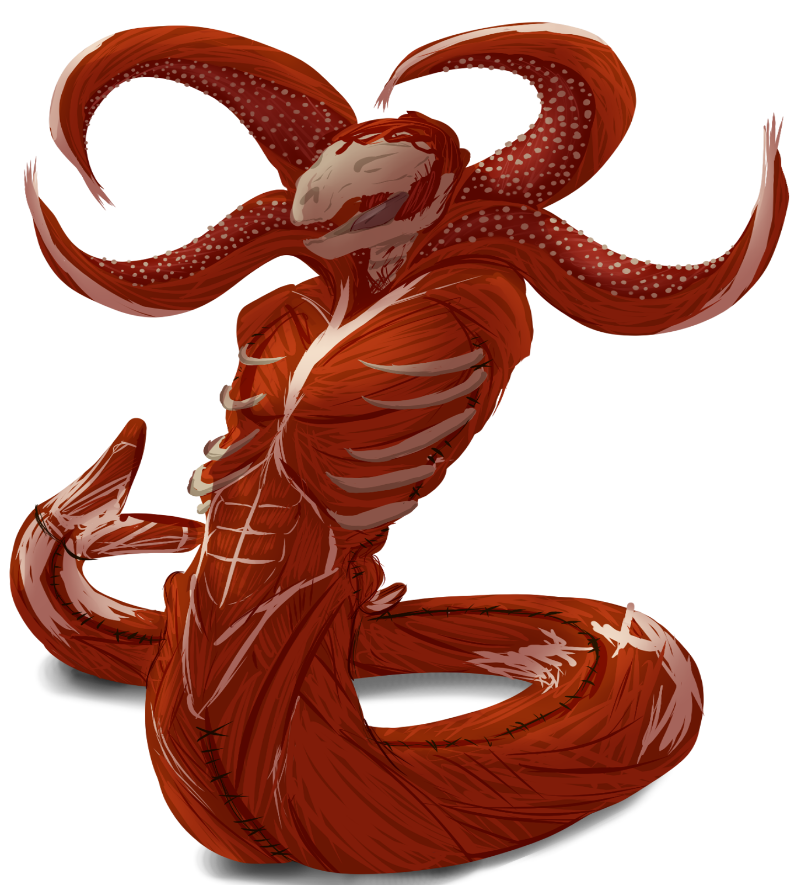

Uma aventura para cinco personagens de 2º nível.
Lembre-se de que, ao contrário da aventura original de Curse of Strahd, os jogadores deste guia começam no 2º nível, e não no 1º.
Os jogadores começam na cidade de Daggerford, na noite anterior ao Highharvesttide, um banquete e festividade anual. As estalagens locais estão lotadas para a noite, e os jogadores — vagabundos com pouca moeda e menos companhia ainda — encontram abrigo no estábulo do Nightmare’s Bridle, uma taverna caindo aos pedaços nos arredores da cidade.
Quando as relíquias que carregam pressentem a presença da Death House, porém, os jogadores são conduzidos pelas ruas encharcadas de Daggerford até a soleira à espera da casa.
Uma vez lá dentro, os jogadores ficam presos e são informados de que um monstro os caçará assim que despertar. Eles têm seis horas para encontrá-lo primeiro e ou aplacá-lo com um sacrifício adequado — ou matá-lo. Enquanto exploram a casa, vão descobrindo sua história macabra, bem como a verdadeira identidade da fera que espreita lá embaixo.
Se os jogadores matarem o monstro, a casa começa a ruir, forçando-os a fugir ou a se perderem sob os escombros. Ao emergirem, descobrem que os arredores mudaram, transportando-os para a terra sombria de Barovia.
Veja Os Primeiros Seguidores de Strahd para um relato completo da história medonha da Death House.
Quer um módulo de Foundry totalmente pronto para o Arco A: Fuga da Death House? Baixe o manifesto do módulo oficial do Reloaded, da Eidolon Publishing, aqui!
A1. Daggerford
Curse of Strahd: Reloaded foi escrito deliberadamente para minimizar o tempo gasto longe da mesa, com o objetivo de servir, na maior medida possível, como uma campanha de "preparação zero". Para tornar isso viável, este guia foi projetado para conduzir os jogadores por caminhos específicos e cuidadosamente curados ao longo da aventura, ainda que oferecendo graus intencionais de liberdade que, embora significativos, não alteram substancialmente o desfecho final da campanha.
Se você quiser minimizar sua carga de trabalho, faça o possível para evitar mudanças ou acréscimos a este guia. Fazê-lo provavelmente alterará o modo como os jogadores se relacionam com sua narrativa e sua jogabilidade, perturbando pilares de sustentação difíceis de perceber sem reler o guia inteiro várias vezes. (Por exemplo, aumentar as distâncias entre os assentamentos barovianos torna diversas missões dos Atos II e III impossíveis de concluir sem uma reformulação completa de toda a linha do tempo da campanha.) Quaisquer modificações — como mudanças em prazos, distâncias, blocos de estatísticas, motivações de personagens ou eventos — são feitas por conta e risco do próprio Mestre, e podem levar a TPKs, divergências descontroladas ou tramas insatisfatórias.
A1a. O Freio do Pesadelo
Se um ou mais de seus jogadores estiverem usando o gancho Relíquias Barovianas, leia o texto a seguir. Caso contrário, prossiga para A2. Death House, abaixo.
É a véspera do Highharvesttide, e uma tempestade desabou sobre Daggerford, com nuvens escuras despejando cascatas de chuva sobre a cidade lá embaixo. Apesar do tempo, porém, a cidade fervilha de expectativa pelo festival de outono que se aproxima, e cada lar transborda de calor e alegria. Uma luz de velas viva e acolhedora cintila em todas as janelas, e sons de canto e dança ecoam pelas ruas molhadas e enlameadas.
Em meio à folia, no entanto, vocês estão à parte. Nem moradores nem visitantes, vocês são vagabundos — viajantes, fantasmas de passagem por uma cidade desconhecida. Enquanto as risadas ressoam de estalagens e casas, vocês encaram um dilema mais simples e mais duro: a busca por abrigo.
Todos os quartos desta cidade já têm dono, todas as lareiras estão lotadas até não caber mais ninguém, deixando vocês nas garras da tempestade impiedosa. Até que o dono da decadente taverna Nightmare’s Bridle lhes oferece um alívio a contragosto: o palheiro acima de seu estábulo. Não é nada de que se gabar, e restam apenas o frio cortante e o cheiro persistente de feno mofado por companhia. Mas é um teto sobre a cabeça de vocês — uma pequena misericórdia numa noite como esta.
Um a um, vocês encontram um lugar em meio à lama e ao feno. Lá em cima, a chuva açoita o estábulo, e trovões pontuam o tamborilar ritmado no telhado. Relâmpagos rasgam os céus, lançando o interior do estábulo em contrastes crus de luz e sombra. A água da chuva pinga sem parar por uma goteira no telhado, serpenteando pelo chão até formar uma poça no canto.
Aqui, então, vocês se encontram: encolhidos na escuridão entre estranhos, enquanto a alegria e o júbilo dançam logo ali, fora de alcance.
Convide os jogadores a descrever a aparência e o semblante de cada personagem, como se acomodaram e como dispuseram seus pertences.
Quando os jogadores terminarem de se apresentar, leia:
Um raio abrasador rasga o céu, iluminando a noite num clarão branco e ofuscante. O estrondo do trovão que se segue é tão alto que sacode o próprio chão sob os pés de vocês, fazendo as vigas do estábulo rangerem e gemerem.
A luz do relâmpago se demora de forma antinatural, silhuetando pequenos fiapos de névoa que se retorcem no ar. Uma bruma espessa, na altura dos tornozelos, se acumula lá fora, envolvendo a terra num véu espectral. Seus tentáculos se enroscam num convite, como se acenassem para vocês rumo à escuridão além.
A chuva continua a fustigar o telhado, mas o vento já não uiva, e os sons festivos de Daggerford parecem abafados e distantes. Os cavalos no estábulo abaixo se agitam inquietos, e seus relinchos ecoam altos na quietude. Uma sensação aflitiva percorre o palheiro, um arrepio gelado que nada tem a ver com o vento ou a chuva.
Uma a uma, as relíquias dos jogadores então reagem como se segue, nesta ordem.
- Brasão de Pedra. O brasão emite um zumbido grave e exala um cheiro de agulhas de pinheiro e terra úmida, odores que se intensificam quando o brasão é movido na direção da Death House.
- Lâmina Quebrada. A lâmina emite um zumbido agudo e começa a tremer violentamente, girando como a agulha de uma bússola na direção da Death House.
- Escama de Dragão. A escama arde num frio gélido, e uma de suas pontas brilha com uma luz prateada e intensa na direção da Death House.
- Medalhão do Nascer do Sol. O medalhão reluz com um brilho dourado e quente, emitindo raios de luz intensa na direção da Death House.
- Fragmento de Âmbar. O fragmento brilha com luz âmbar e puxa seu cordão na direção da Death House.
- Dente de Lobo. O dente se alonga, reluzindo com um luar prateado, e puxa seu cordão na direção da Death House.
- Página Amassada. A tinta na página brilha com luz âmbar, e as runas se rearranjam formando um mapa que mostra a localização da própria página — e uma seta que aponta o caminho até a Death House.
- Estandarte Esfarrapado. O som de tambores de guerra enche o ar, e o estandarte tremula sob um vento invisível na direção da Death House.
- Moeda de Electro. A moeda cai em pé e começa a rolar pelos paralelepípedos enlameados na direção da Death House.
- Pena de Anjo. A pena é arrebatada por um vento invisível, suas barbas cintilando com luz dourada enquanto rodopia pelas ruas rumo à Death House.
- Pena de Corvo. A pena é arrebatada pelo vento, e sua sombra parece dançar no ar enquanto ela rodopia pelas ruas rumo à Death House.
- Cachecol do Andarilho. O cachecol é levado pelo vento, seus padrões mudando e girando no ar enquanto ele redemoinha pelas ruas rumo à Death House.
Se os jogadores partirem no encalço, leia:
Vocês emergem do palheiro para a névoa rodopiante lá fora, as pedras das ruas de Daggerford escorregadias e reluzentes sob seus pés. As risadas e a alegria da cidade agora não passam de um eco oco, e o brilho de sua folia se afogou na neblina que os cerca. O gosto do ar frio e úmido é cortante na língua de vocês, e o som da própria respiração ressoa alto em seus ouvidos.
Suas relíquias os chamam adiante, e as brumas se abrem para dar passagem. Vocês avançam devagar a princípio, depois cada vez mais rápido, o coração martelando no peito. Conforme se embrenham mais fundo no nevoeiro, cada passo pesa mais, e cada eco de trovão é uma batida nesta marcha implacável.
O nevoeiro engole a cidade, reduzindo os edifícios a sombras ameaçadoras, cujas formas dançam e tremeluzem nos clarões esporádicos da tempestade. A chuva martela um ritmo incessante, e o repicar das gotas nos paralelepípedos acompanha o estrondo distante e lamentoso do trovão. Por breves instantes, vocês sentem algo mais sob os pés: a pulsação constante de um coração fundo e distante.
Vocês são puxados para a esquerda, depois para a direita, depois para a esquerda de novo, as relíquias guiando-os por esse labirinto turvo. Distância e direção perderam todo o sentido, e as sombras ao redor se contorcem em formas retorcidas. O sangue canta em seus ouvidos, e o ar fica mais denso, elétrico, enquanto a energia da tempestade — da perseguição — cresce sem qualquer freio.
E então — a pulsação cessa.
O trovão silencia.
E a névoa se abre.
O nevoeiro recua como uma cortina, revelando uma silhueta alta e sinistra que se ergue na penumbra diante de vocês.
Esta é a Death House.
A2. Death House
Se um ou mais de seus jogadores estiverem usando o gancho Perdidos nas Brumas, leia o texto a seguir. Caso contrário, prossiga para A2a. A Chegada, abaixo.
Highharvesttide em Daggerford. É tempo de alegria e celebração, de lareira e lar, de risadas douradas ressoando noite adentro. Mas esta noite, enquanto uma tempestade varre a cidade, vocês se encontram apartados do calor e da folia, atraídos para o abraço frio e escuro do mistério.
Como mercenários, vocês não são estranhos ao perigo nem ao desconhecido. Mas isto — isto é diferente. Nas últimas semanas, sussurros se espalharam por Daggerford falando de desaparecimentos: gente comum, sumida sem deixar rastro.
A única ligação entre eles? Um casarão antigo e imponente, conhecido em tom de sussurro como “Death House”.
Esta noite, com a tempestade rugindo lá fora, vocês foram convocados para investigar essa morada misteriosa. A proclamação do arauto da cidade ainda ecoa em seus ouvidos, uma recompensa para quaisquer almas valentes que ousassem descobrir a verdade. Movidos por uma mistura de ganância, curiosidade e talvez uma pitada de bravata, vocês deram um passo à frente.
Agora, guiados pelo brilho fraco de suas lanternas, vocês percorrem as ruas de paralelepípedos escorregadias e encobertas pela névoa. A alegria distante contrasta duramente com o silêncio inquietante ao redor. O mundo se reduziu a sussurros abafados e ao tamborilar constante da chuva, uma serenata sombria para a jornada perigosa de vocês.
E então, como se respondesse a uma convocação não dita, as brumas à sua frente se abrem, revelando a silhueta funesta de seu destino: a “Death House”. Sua fachada escura de pedra e suas torres altivas pairam ameaçadoras contra o céu revolto pela tempestade, um desafio mudo à determinação de vocês.
A2a. A Chegada
Entrada
Esta cena ocorre no Apêndice B: Área 1.
Leia a todos os jogadores o texto a seguir:
Um casarão imponente se ergue diante de vocês: quatro andares de pedra fria manchada de fuligem, janelas altas e estreitas e telhados de cumeeira aguda formando um retrato de grandiosidade austera e arrepiante. Na metade da altura, uma sacada estreita se projeta do terceiro andar, oferecendo um poleiro lúgubre de onde vigiar os arredores.
A peça central dessa fachada intimidante é o pórtico, um arco de pedra que monta guarda diante das portas de carvalho da casa. Um portão de ferro forjado preenche esse arco, e suas dobradiças enferrujadas rangem enquanto ele balança ao vento.
Dos dois lados do portão, lampiões a óleo pendem de correntes, com uma luz fraca e trêmula que lança um clarão adoentado, mal capaz de perfurar a névoa ao redor.
Além do portão, um par de portas robustas de carvalho permanece fechado, emoldurado pelo portão e pelos lampiões. As portas são velhas e castigadas, com a madeira escurecida pelo tempo, mas se mantêm firmes e altivas — uma entrada nada acolhedora para a casa que há por trás.
Uma rajada de vento passa por vocês, trazendo consigo um sussurro de pavor gélido que faz um arrepio descer pela espinha.
Quaisquer jogadores que tenham começado com o gancho Relíquias Barovianas agora conseguem ver os jogadores que começaram com o gancho Perdidos nas Brumas, e vice-versa. (Se alguma das relíquias dos jogadores voou ou rolou até a Death House — como o cachecol do andarilho ou a moeda de electro —, ela pousa na soleira da casa, logo depois do pórtico.) Fora isso, a rua está deserta.
A entrada além do pórtico é, no mais, como descrita em Entrance (p. 212).
O culto da Death House não conquistou o afeto de Strahd em vida. Mas, na morte, as duas partes chegaram a um entendimento informal e tácito.
Em troca da permissão de vagar bem longe da terra enevoada de Barovia para reivindicar sacrifícios, a Death House é obrigada a retornar ao vale após cada excursão de caça. Se algum aventureiro consegue escapar do altar ensanguentado da casa, ele inevitavelmente emerge no domínio de Strahd — garantindo a ele uma safra digna de presas a perseguir.
Salão Principal
Esta cena ocorre no Apêndice B: Área 2.
Quando os jogadores cruzam a soleira da Death House, quaisquer relíquias barovianas que carreguem deixam de estar ativas. (Por exemplo, o medalhão do nascer do sol para de brilhar.)
O salão principal é em grande parte como descrito em Main Hall (p. 212), mas agora contém um relógio de pêndulo, posicionado no espaço circular ao pé da escadaria.
Em vez de uma espada longa, é o retrato da família Durst de Upper Hall (p. 213) que agora está pendurado acima da lareira. No retrato, Thorn segura uma boneca sorridente vestida com um vestido de renda amarela. Uma placa sob o retrato diz: Sr. Gustav e Sra. Elisabeth Durst, com seus dois filhos, Rosavalda e Thornboldt.1
 "The Durst Family", de Caleb Cleveland. Apoie-o no Patreon!
"The Durst Family", de Caleb Cleveland. Apoie-o no Patreon!
Pouco depois de todos os personagens entrarem no salão principal, a porta da frente se fecha com estrondo, apagando todas as luzes da casa. O som da chuva lá fora desaparece por completo, deixando a casa num silêncio arrepiante.
Então, letras de sangue começam a surgir na parede sul, logo acima da escadaria de mármore. Elas dizem o seguinte:
Que um festim de sangue espera.
Dorme até a meia-noite soar
E acorda para se saciar.
Se a presa quiser seu fim adiar,
Que ao quarto secreto vá levar
Um dom que lhe abrande o furor
Mas cuidado com os servos do senhor.
O relógio de pêndulo então bate seis horas.
Quando o relógio bater seis horas, coloque três dados de seis faces na mesa, diante dos jogadores, cada um mostrando o número seis. Cada ponto nos dados representa vinte minutos até a meia-noite.
Conforme os jogadores exploram a casa, vá diminuindo esse relógio de dados para indicar a passagem do tempo, sempre começando pelo dado que mostra o menor número. Se o menor dado mostrar um, você pode baixá-lo a "zero" removendo-o do grupo.
O relógio de dados regride da seguinte forma, representando o tempo total que os jogadores passaram na casa:
- Cada vez que os jogadores entram em um novo andar da casa ou da masmorra, reduza o relógio de dados em um.
- Cada vez que os jogadores fazem um teste de Percepção ou Investigação para vasculhar um cômodo inteiro, reduza o relógio de dados em um.
- Cada vez que os jogadores completam um descanso curto, reduza o relógio de dados em três.
Uma hora inteira se passa toda vez que um dado cai de 4 para 3, ou toda vez que um dado cai de 1 para 0. O relógio de pêndulo do Salão Principal badala a cada hora cheia, e pode ser ouvido por toda a casa e por toda a masmorra.
Quando o relógio bater meia-noite, o monte de carne (flesh mound) da Câmara Ritual desperta e segue direto ao encontro dos jogadores, saindo pelo Alçapão Oculto rumo ao Covil dos Lobos, se for preciso, para alcançá-los. Ao menos um minuto deve transcorrer entre o momento em que o monte acorda e o momento em que ele alcança os jogadores pela primeira vez, anulando sua característica sono pesado e permitindo que ele use suas ações de ataque múltiplo.
Por causa do prazo até a meia-noite, é impossível para os jogadores fazer um descanso longo na Death House. Ainda assim, eles podem precisar de um descanso curto. Cada vez que o fizerem dentro da casa principal, vivenciam uma ou mais das seguintes assombrações:
- Um jogador ouve ratos arranhando para cima e para baixo nos vãos entre as paredes. Um fedor espesso e sufocante de podridão se infiltra no cômodo.
- Um jogador ouve o cantarolar de uma mulher vindo do outro lado de uma porta fechada. Se a porta for entreaberta, um olho azul e frio encara de volta antes de sumir.
- Um jogador ouve passos descendo do sótão, que param diante de sua porta antes de se afastar rumo à biblioteca. Logo depois, um ruído de raspagem pode ser ouvido vindo da biblioteca — o som da porta secreta.
- Um jogador ouve uma risada maníaca ecoando de muito abaixo da casa.
- Um jogador ouve, no ouvido direito, uma voz feminina suplicante que jura que "não é dele". No ouvido esquerdo, outra voz feminina, mais fria, zomba e diz: "Claro que você diria isso, sua pequena meretriz."
Um jogador que abra qualquer porta ou cortina voltada para fora na Death House, ou que saia para qualquer sacada, descobre que o exterior da casa foi cercado por tentáculos grossos e carnosos. Embora os tentáculos possam ser danificados, outros crescem rapidamente para substituí-los, selando os jogadores lá dentro. Um jogador que examine os tentáculos percebe que eles parecem brotar de baixo da casa.
A2b. O Primeiro Andar
Guarda-Casacos
Esta cena ocorre no Apêndice B: Área 2.
Um jogador que investigue o guarda-casacos anexo ao Salão Principal pode notar um envelope despontando do bolso de uma das capas. O envelope, endereçado a Lady Lovina Wachter, contém um convite. Ele diz:
SR. GUSTAV & ELISABETH DURST
celebração do primeiro aniversário do Moinho Durst.
Residência Durst, Vila de Barovia
6 horas da tarde
13 de Neyavr, 348
Jantar e refrescos serão servidos.
 "Durst Invitation", de Caleb Cleveland. Apoie-o no Patreon!
"Durst Invitation", de Caleb Cleveland. Apoie-o no Patreon!
Covil dos Lobos
Esta cena ocorre no Apêndice B: Área 3.
Este cômodo é em grande parte como descrito em Den of Wolves (p. 212). Quando os jogadores entram nele, leia:
Ao entreabrirem a porta deste cômodo, vocês vislumbram algo feroz lá dentro: um olho âmbar que reluz na escuridão e um focinho bestial retorcido num rosnado.
Se os jogadores prosseguirem, leia:
A porta se abre com um rangido, revelando um lobo de pelo cinzento congelado no lugar. Basta um instante para vocês perceberem que ele não está se movendo — e mais um para perceberem que ele não está sozinho.
Este cômodo revestido de painéis de carvalho parece o covil de um caçador. Montada acima da lareira há uma cabeça de cervo e, dispostos pelas bordas do aposento, mais dois lobos empalhados — um grande lobo cinzento e um lobo marrom menor.
Duas poltronas acolchoadas, cobertas por peles de animais, estão voltadas para a lareira, com uma mesa de carvalho entre elas sustentando um sortimento de objetos. Um lustre pende sobre uma mesa forrada de tecido cercada por quatro cadeiras, e dois armários se encostam nas paredes. Um par de pequenos brinquedos parece ter sido esquecido debaixo de uma das poltronas.
Os brinquedos largados são pequenos lobos cinzentos de pelúcia, cujas peles puídas mostram sinais de muito remendo e retalhos. Costuras desajeitadas em suas barrigas dizem ROSE e THORN, respectivamente.
Além de seu outro conteúdo, o armário leste contém cinco virotes de besta prateados misturados aos outros sessenta virotes. Já o armário norte contém também um bordado infantil emoldurado que retrata um menino e uma menina segurando as mãos de uma jovem, ao lado de palavras costuradas de forma desajeitada que dizem PARA A SENHORITA KLARA. O rosto da jovem foi rasgado e recortado.
Na primeira vez em que nenhum jogador estiver olhando para eles, os três lobos taxidermizados se movem. Quando os jogadores voltam a olhar, o grande lobo cinzento está de pé ao lado do lobo marrom menor, e o primeiro lobo cinzento virou o rosnado na direção dos outros.
Um jogador que passe num teste de Inteligência (Natureza) CD 12 consegue identificar o grande lobo cinzento como macho e os outros dois como fêmeas.
Sala de Jantar
Esta cena ocorre no Apêndice B: Área 5.
Os jogadores que se aproximam desta porta conseguem ouvir o som abafado de um animado banquete: taças tilintando, risadas discretas e conversas distantes. Se os jogadores abrirem a porta ou baterem nela, porém, o cômodo silencia, restando apenas a imobilidade e a grandiosidade fria do aposento além.
Este cômodo é em grande parte como descrito em Dining Room (p. 213). Quando os jogadores entram nele, leia:
Vocês entram numa sala de jantar revestida de painéis de madeira. A peça central é uma mesa entalhada de mogno cercada por oito cadeiras de espaldar alto, com braços esculpidos e assentos estofados. Um lustre de cristal pende sobre a mesa, que está posta com talheres resplandecentes e taças de cristal polidas até brilharem. Montado acima da lareira de mármore há um quadro com moldura de mogno retratando um vale alpino.
Os painéis das paredes trazem entalhes elegantes de cervos entre as árvores. Cortinas de seda vermelha cobrem as janelas, e uma tapeçaria pende de uma barra de ferro presa à parede sul.
A mesa geme sob o peso de um banquete de aparência deliciosa. Pratos primorosos repousam sobre travessas suntuosas: aves assadas suculentas glaceadas com um molho de mel reluzente, cortes de carne bovina perfeitamente grelhados ainda soltando um leve vapor, uma variedade de queijos e frutas frescas, e pães recém-assados exalando um aroma reconfortante.
Um jogador que prove a comida não sofre efeito nocivo algum.
Cozinha e Despensa
Esta cena corresponde ao Apêndice B: Área 4.
Este cômodo é em grande parte como descrito em Kitchen and Pantry (p. 213). Quando os jogadores entram nele, leia:
Vocês entram numa cozinha arrumada, com louças, panelas e utensílios dispostos com esmero nas prateleiras. Sobre uma bancada de trabalho há uma tábua de corte e um rolo de macarrão. Um forno de pedra em forma de cúpula fica perto da parede leste, com sua chaminé de ferro torta ligada a um buraco no teto. Atrás do fogão e à esquerda há uma porta estreita.
No canto frontal direito do cômodo há uma pequena porta de madeira encaixada na parede.
Se os jogadores examinarem os utensílios, descobrem que a maior faca de cozinha está faltando.
Um jogador que entre na despensa descobre que uma das prateleiras guarda um jogo de belos pratos decorativos pintados com imagens de moinhos de vento. Um dos pratos parece ter sido derrubado da prateleira e jaz em cacos no chão, deixando um vazio na fileira de pratos.
Alguns centímetros atrás do espaço vazio na prateleira repousa uma antiga panela de cobre, com a tampa ligeiramente entreaberta. Espiando por baixo da tampa está a rolha do que parece ser uma garrafa de vinho.
Um jogador que abra a panela encontra dentro dela uma garrafa de vinho, um pedaço dobrado de renda delicada, um frasco com um pó seco amarronzado e um buquê de girassóis murchos amarrado a um pequeno rolo de pergaminho.
- O rótulo do vinho mostra que ele vem da vinícola Wizard of Wines e traz o nome da bebida: Champagne du le Stomp. (Um jogador que beba o vinho descobre que ele virou vinagre, como se tivesse envelhecido séculos por magia em meros instantes.)
- O pedaço de renda traz a inicial "K" bordada num dos cantos.
- Um teste de Inteligência (Natureza) CD 14 bem-sucedido identifica o pó marrom como sílfio seco, uma erva contraceptiva.
- O rolo de pergaminho diz: "Para a luz da minha vida. —G."
Se os jogadores lerem o bilhete, uma das facas da cozinha voa de sua prateleira e se crava na parede oposta.
A2c. O Segundo Andar
Salão Superior
Esta cena ocorre no Apêndice B: Área 6.
Este cômodo é em grande parte como descrito em Upper Hall (p. 213). Quando os jogadores entram nele, leia:
Lampiões a óleo apagados estão fixados nas paredes deste salão elegante. Pendurada acima da cornija da lareira há uma espada longa com um camafeu de moinho de vento trabalhado no punho.
Armaduras completas de pé ladeiam portas de madeira nas paredes leste e oeste. Cada armadura empunha uma lança e traz um elmo com viseira em forma de cabeça de lobo. As portas entre elas estão entalhadas com imagens de jovens dançando.
A escadaria de mármore vermelho segue sua espiral ascendente até um terceiro andar, com uma corrente de ar frio sussurrando lá de cima.
Quarto dos Criados
Esta cena ocorre no Apêndice B: Área 7.
Este cômodo é em grande parte como descrito em Servants’ Room (p. 213). Quando os jogadores entram nele, leia:
Este quarto sem qualquer decoração contém um par de camas com colchões de palha. Ao pé de cada cama há um baú fechado. Uma porta à esquerda parece levar a um armário.
No canto direito há uma pequena porta de madeira, com um botão de metal embutido na parede ao lado dela. Um cesto cheio de roupa suja parece ter sido deixado ali perto.
O cesto contém roupas de homem, incluindo ternos finos, túnicas, gravatas, calças e meias. No entanto, uma única combinação feminina, bem menor, parece ter se misturado às demais.
Conservatório
Esta cena ocorre no Apêndice B: Área 10.
Os jogadores que se aproximam desta porta conseguem ouvir o som tênue de um cravo tocando do outro lado. Se os jogadores abrirem a porta ou baterem nela, porém, a música silencia.
Este cômodo é em grande parte como descrito em Conservatory (p. 214). Quando os jogadores entram nele, leia:
Vocês entram num salão de decoração elegante, cujas janelas estão cobertas por cortinas diáfanas. Um lustre folheado a latão pende do teto, e cadeiras estofadas se alinham junto às paredes.
Vários painéis de vitral nas paredes retratam homens, mulheres e crianças belíssimos cantando e tocando instrumentos. Um cravo com seu banco repousa no canto noroeste. Perto da lareira há uma grande harpa de pé. Estatuetas de alabastro de dançarinos bem-vestidos adornam a cornija da lareira.
O Cravo. Um jogador que examine o cravo descobre que uma das teclas parece estar permanentemente afundada. Um jogador que investigue o interior do cravo encontra a causa: um pergaminho enrolado enfiado sob uma das cordas.
O pergaminho é uma partitura manuscrita para cravo intitulada Valsa para Klara. Se a partitura for tocada no cravo, leia:
Assim que vocês pousam os dedos nas teclas, as notas ecoam, e uma melodia assombrosa preenche o cômodo silencioso e empoeirado. Conforme a execução avança, a música parece ganhar vida própria, e suas mãos correm pelas teclas sem serem chamadas, como se guiadas por uma força invisível.
Das bordas do salão, figuras espectrais começam a se materializar, girando e serpenteando numa dança fantasmagórica, como se conduzidas pela canção. A maioria é desconhecida para vocês, mas dois rostos vocês reconhecem: Elisabeth Durst, no canto, observando a aparição de Gustav dançar com uma jovem bonita vestida com roupas humildes.
Os olhos da aparição de Elisabeth se estreitam num olhar frio e furioso. Os dançarinos, porém, mal lhe dão atenção, e a canção acelera enquanto os espíritos rodopiam ao ritmo do crescendo do cravo.
Num movimento rápido, Elisabeth leva a mão a um pingente em seu pescoço espectral — um fragmento de âmbar cintilante pendurado num cordão de névoa etérea. Quando seu punho fantasmagórico se fecha em torno dele, seus olhos faíscam num âmbar vivo e ameaçador — e os dançarinos espectrais se dissipam, varridos como que por um vento invisível.
A aparição de Elisabeth permanece apenas mais um instante antes de desaparecer com as demais. Ao sumir, um som ressoa pelo cômodo: o rangido grave de madeira raspando, vindo do aposento do outro lado do corredor. O chão treme de leve — e vocês ouvem um estrondo vindo da cornija da lareira. Duas das estatuetas de alabastro caíram de seu lugar na prateleira: uma tombada de lado; a outra, estilhaçada pelo chão.
Um jogador que examine as estatuetas caídas descobre que a estatueta tombada rachou no rosto, nos braços e no torso, e retrata uma dançarina jovem e esbelta. A estatueta estilhaçada partiu-se em dezenas de pedaços e parece ter retratado, um dia, um homem atraente e mais velho. Uma terceira estatueta, também de uma dançarina, permanece desafiadoramente de pé sobre a cornija, onde as três outrora se erguiam.
Tocar a Valsa para Klara também faz com que a estante — e não a porta atrás dela — na Biblioteca se abra, expondo a porta secreta trancada logo atrás. (O som de raspagem é o da estante arrastando pelo chão.)
Biblioteca
Esta cena ocorre no Apêndice B: Área 8.
Este cômodo é em grande parte como descrito em Library (p. 213-14). Quando os jogadores entram nele, leia:
Cortinas de veludo vermelho cobrem as janelas deste cômodo. Uma primorosa escrivaninha de mogno e uma cadeira de espaldar alto combinando estão voltadas para a entrada e para a lareira, acima da qual pende um quadro emoldurado de um moinho de vento empoleirado sobre um rochedo. Nos cantos do aposento há duas poltronas fofas e estofadas.
Estantes do chão ao teto revestem a parede sul. Uma escada de madeira sobre rodízios permite alcançar com mais facilidade as prateleiras altas.
A Escrivaninha. Um bilhete manuscrito repousa sobre a escrivaninha. Ele diz:
Prezados Sr. e Sra. Durst,
À luz da minha atual condição, peço respeitosamente sua licença para um breve afastamento de minhas responsabilidades.
Ainda que minha devoção a seus queridos filhos torne esta decisão difícil, tomei a iniciativa de encontrar uma solução que, espero, sirva bem à sua casa. Uma boa conhecida minha tem experiência no cuidado de crianças, e acredito que ela poderia assumir meu papel durante meu afastamento temporário sem dificuldade alguma.
Sei que meu pedido não é isento de complicações. Contudo, meus anos a serviço de sua família me mostraram a profundidade de sua compreensão e de sua compaixão. Sinto de verdade que me tornei parte desta família, e aguardo com esperança o momento de trazer mais um membro dessa família ao mundo.
Com sinceros votos,
Klara
A gaveta superior da escrivaninha agora contém uma série de recibos de velas, adagas e incenso, em vez da chave do Quarto das Crianças.
Um personagem que vasculhe o cômodo por 1 minuto e passe num teste de Sabedoria (Percepção) CD 15 consegue ver a luz trêmula de velas escapando por baixo da porta secreta.4
Conforme os jogadores exploram a Death House e os muitos lugares secretos da terra de Barovia, não se esqueça da regra de Múltiplos Testes de Habilidade (Dungeon Master's Guide, p. 237). Por exemplo, um jogador que vasculhe a biblioteca pode levar 10 minutos para ser automaticamente bem-sucedido no teste.
A Porta Secreta. A porta secreta deste cômodo tem dois componentes. Primeiro, um jogador precisa puxar a alavanca como descrito em Secret Door (p. 214). Fazê-lo faz a estante girar para a frente, revelando uma parede de madeira lisa atrás dela.
Uma vez movida a estante, os jogadores podem ver atrás dela um pequeno painel de madeira escura, embutido na parede aproximadamente à altura do peito. Um pequeno nicho oco, irregular e recortado, fica no centro do painel e emana um tênue brilho âmbar.
A porta não pode ser aberta a menos que o fragmento de âmbar da Suíte Principal seja encaixado no nicho. A porta secreta então se abre, permitindo que os jogadores entrem na Sala Secreta.
Sala Secreta
Esta cena ocorre no Apêndice B: Área 9.
Este cômodo é em grande parte como descrito em Secret Room (p. 214). Quando os jogadores entram nele, leia:
Esta pequena sala oculta está abarrotada de estantes que gemem sob o peso de tomos antigos e de aparência sinistra, encadernados em couro. Um pesado baú de madeira com pés de ferro em forma de garras está encostado na parede sul, com a tampa semicerrada. Saindo do baú, com as costelas e a cabeça presas sob a tampa, há um esqueleto vestindo armadura de couro.
O baú não contém mais a escritura de Old Bonegrinder. Além disso, altere a carta de Strahd para que diga o seguinte:
Minha mais patética serva,
Não sou um messias enviado a você pelos Poderes Sombrios desta terra. Não vim para conduzi-la por um caminho rumo à imortalidade. Por mais almas que tenha sangrado em seu altar oculto, por mais visitantes que tenha torturado em sua masmorra, saiba que não foi você quem me trouxe a esta bela terra. Você não passa de um verme se contorcendo em meu solo.
Você diz estar amaldiçoada, sua fortuna esgotada. Seu marido buscou consolo no seio de outra mulher, gerou um filho bastardo e a levou a trocar o amor pela loucura. Amaldiçoada pelas trevas? Disso não tenho dúvida alguma. Salvá-la de sua desgraça? Penso que não. Prefiro-a bem como está.
Seu temível lorde e senhor,
Strahd von Zarovich
Os jogadores não reconhecem o nome "Strahd von Zarovich".
Os jogadores que encontram a escritura de Old Bonegrinder no baú secreto frequentemente chegam à conclusão equivocada de que saqueá-la os torna os novos donos do moinho. Como resultado, é provável que tentem explorar o moinho durante Arco C: Rumo ao Vale, desencadeando um conflito com o coven de bruxas noturnas e — sem culpa alguma da parte deles — um provável TPK. Por isso, a escritura foi removida, para ajudar a evitar esse desfecho.
A2d. O Terceiro Andar
Conforme os jogadores sobem a escada em espiral até o terceiro andar, lembre-os de que conseguem enxergar pelo vão central da escadaria até o andar mais baixo.
Sacada
Esta cena ocorre no Apêndice B: Área 11.
Este cômodo é em grande parte como descrito em Balcony (p. 214). Quando os jogadores entram nele, leia:
Vocês sobem a escadaria de mármore vermelho até o seu ponto mais alto, chegando a uma sacada empoeirada. O ar aqui é seco e mofado, mas com um leve travo estranho de cobre.
Uma armadura completa de placas negras está encostada numa das paredes, coberta de teias de aranha e marcada pelo tempo. Lampiões a óleo estão fixados nas paredes de painéis de carvalho desbotados, entalhadas com cenas silvestres de árvores, folhas caindo e pequenos animais.
Quando acionada, a armadura animada usará um ou ambos os ataques de seu _ataque múltiplo_ para tentar empurrar um jogador por cima do parapeito com um ataque de empurrar, ou para tentar agarrar o alvo mais próximo antes de derrubá-lo caído.
Se a armadura for jogada lá embaixo, no primeiro andar, e os jogadores não revelarem sua presença no alto da sacada, ela não consegue percebê-los com seus 18 metros de visão às cegas, e é estúpida demais para pensar em subir de volta.
Uma criatura empurrada por cima da beirada da sacada cai dois andares, ou seis metros, e sofre 2d6 de dano de concussão. Essa criatura precisa passar num teste de Destreza (Acrobacia) CD 15 ou cai caída.
Nível do Combate: Leve Nível de Personagem Esperado: 2 Consumo de PV Esperado: 15%
Inimigos:
| 3 Jogadores | 4 Jogadores | 5 Jogadores | 6 Jogadores | |
|---|---|---|---|---|
| Armadura Animada | 1 | 1 | 1 | 1 |
Balanceamento:
Se você tiver menos ou mais de 5 jogadores, modifique o encontro das seguintes formas:
| Número de Jogadores | Modificação |
|---|---|
| 3 | Reduza os pontos de vida da armadura para 12. |
| 4 | Reduza os pontos de vida da armadura para 21. |
| 6 | Aumente os pontos de vida da armadura para 48. |
Suíte Principal
Esta cena ocorre no Apêndice B: Área 12.
Quando um jogador se aproxima desta porta pela primeira vez, leia:
Estas portas suntuosas erguem-se altíssimas, com molduras de madeira escura envolvendo um par de vitrais empoeirados. Cada vidraça traz gravados desenhos intrincados que lembram moinhos de vento, e seus tons outrora vibrantes agora estão desbotados e encobertos sob um véu espesso de sujeira.
Através da névoa poeirenta que arde nos olhos de vocês, vocês vislumbram algo do outro lado das vidraças: uma silhueta, parada a poucos centímetros do vidro, iluminada por trás por um brilho âmbar fraco. Está imóvel, sem se mexer, mas a simples visão dela trava seus músculos como num torno, e seus membros se recusam a obedecer à mente.
O ar ao redor de vocês se adensa, e sua temperatura despenca para um frio de gelar os ossos. A respiração de vocês embaça as vidraças, uma geada delicada se alastra sobre elas, e os rangidos e sussurros distantes da casa são engolidos por um silêncio pesado.
A sombra atrás da porta é quase disforme — insubstancial —, mas sua presença desperta um pavor primordial no fundo da medula de vocês. Seus corações batem mais rápido, o suor brota na testa, o pulso dispara nas veias. Lentamente, a silhueta começa a virar a cabeça na direção de vocês.
E então, tão de repente quanto surgiu, a sombra se evapora. O frio cortante se dissipa, e os sons discretos da casa retornam mais uma vez.
Este cômodo é em grande parte como descrito em Master Suite (p. 214). Quando os jogadores entram nele, leia:
Vocês entram num quarto principal empoeirado e tomado de teias de aranha, com cortinas cor de vinho cobrindo as janelas. Uma cama de dossel com cortinados bordados e véus diáfanos esfarrapados está encostada na parede central.
Uma porta voltada para o pé da cama tem um espelho de corpo inteiro desbotado montado nela. No canto direito do cômodo há uma pequena porta de madeira, com a superfície meio apodrecida pelo tempo. Um botão de metal embaçado está embutido na parede ao lado dela.
Um tapete de pele de tigre apodrecido jaz no chão diante da lareira, acima da qual pende um retrato coberto de poeira do homem e da mulher do retrato do primeiro andar. Uma saleta tomada por teias no canto sudoeste contém duas cadeiras e uma mesa com vários objetos sobre ela, além de uma porta com uma janela escura e salpicada de sujeira.
O aposento também contém um par combinando de guarda-roupas, uma poltrona acolchoada e uma penteadeira com espelho de moldura de madeira e um porta-joias de prata. Um suave brilho âmbar escapa por baixo da tampa do porta-joias.
A Cama. Um jogador que se aproxime da cama consegue ver que uma grande faca de cozinha manchada de sangue foi cravada num dos travesseiros.
O Porta-Joias. O porta-joias não guarda objeto de valor algum. Em vez disso, está cheio de grãos, com um fragmento de âmbar repousando bem no centro. (Esse fragmento de âmbar é a chave exclusiva da porta secreta da Biblioteca.)
Um rolo de pergaminho está meio enterrado nos grãos, ao lado do fragmento. Se for desenrolado, diz o seguinte:
Drasha,
Escolhi você como guardiã da Besta em minha ausência. Caso a Besta fique indócil ou dê sinais de agitação enquanto eu estiver fora, deixei este fragmento de âmbar para enfraquecê-la e aplacar sua fúria.
Se a necessidade surgir, apresente o fragmento e pronuncie o nome da Besta; se falar com convicção, ela lhe obedecerá em meu lugar, ainda que por pouco tempo. Mas trate de estar longe da casa antes que ela desperte por completo à meia-noite.
Enquanto a Besta respirar, é ela — e não você — o coração desta casa, e refeição alguma jamais saciará seu apetite. Se você se demorar em seu domínio, isso significará a perdição de todos vocês.
Elisabeth
Veja O Fragmento de Âmbar de Elisabeth em Câmara Ritual, abaixo, para mais informações sobre o fragmento de âmbar.
A Sacada. Um jogador que saia do quarto para a sacada vê apenas uma parede de tentáculos carnosos envolvendo o exterior da casa. Os tentáculos são como descritos em Salão Principal.
Banheiro
Esta cena ocorre no Apêndice B: Área 13.
Este cômodo é como descrito em Bathroom (p. 215).
Depósito
Esta cena ocorre no Apêndice B: Área 14.
Este cômodo é em grande parte como descrito em Storage Room (p. 215). Quando os jogadores entram nele, leia:
Prateleiras empoeiradas revestem as paredes deste cômodo. Algumas delas têm lençóis dobrados, cobertores e velhas barras de sabão. Uma vassoura coberta de teias de aranha está encostada na parede do fundo.
Quando um jogador se aproxima pela primeira vez a até 1,5 metro da vassoura de ataque animado, ela ataca de surpresa assim que ele desvia o olhar ou se vira, dando-lhe uma paulada na cabeça. Em seguida, ela retorna imediatamente à sua posição inicial — agora livre de teias. Nos turnos seguintes, a vassoura usa seu _ataque múltiplo_ para continuar atacando qualquer jogador que não esteja olhando para ela e permaneça a até 1,5 metro, abrindo mão de ataques de oportunidade contra os jogadores que se afastarem.
Suíte da Babá
Esta cena ocorre no Apêndice B: Área 15.
Este cômodo é em grande parte como descrito em Nursemaid’s Suite (p. 217). Quando os jogadores entram nele, leia:
Poeira e teias de aranha encobrem este quarto de decoração elegante. Uma cama grande está encostada na parede do fundo, com suas roupas outrora opulentas agora desbotadas e puídas.
Ao lado da cama, uma toalha coberta de mofo cobre a maior parte de um livro empoeirado e amarelado sobre uma das duas mesinhas de cabeceira. Do outro lado do aposento, vocês conseguem ver mais um par de portas de vitral, com as vidraças salpicadas de sujeira e encardido.
À esquerda há um guarda-roupa vazio, com as portas ligeiramente entreabertas. Fixado ao lado dele há um espelho de corpo inteiro, cuja moldura de madeira é entalhada imitando heras e frutinhas. À direita há uma porta fechada.
Enquanto observam o quarto, vocês notam que os cobertores sobre a cama se erguem ligeiramente acima do colchão, como se algo estivesse deitado ali embaixo. Sob o olhar de vocês, dá para ver as cobertas subindo e descendo devagar, quase imperceptivelmente, com um farfalhar baixo e ritmado.
A Cama. Um jogador que retire as cobertas da cama descobre que não há nada debaixo delas. Em vez disso, ele encontra apenas um colchão manchado de sangue e grosseiras amarras para mãos e pés, feitas de arame farpado pregado nos quatro postes da estrutura da cama.
As Portas. Um jogador que saia do quarto pelas portas de vitral e vá até a sacada vê apenas uma parede de tentáculos carnosos envolvendo o exterior da casa. Os tentáculos são como descritos em Salão Principal.
O Livro. O livro é um exemplar coberto de teias de um romance açucarado e picante intitulado Lábios de Sangue Azul. Ele conta a história do romance entre uma camponesa e um duque abastado.
O Quarto do Bebê. A porta do quarto do bebê está fechada. Um jogador que se aproxime dela ouve o cantarolar baixinho de uma jovem. (Um jogador que já tenha lido ou ouvido a canção no Conservatório reconhece a melodia como a Valsa para Klara.)
Se um jogador entrar no quarto do bebê, o cantarolar cessa abruptamente. Leia:
O ar neste pequeno quarto de bebê é estranhamente morno e traz um travo de cobre. Runas vermelhas como sangue cobrem as paredes, dispostas em círculos concêntricos ao redor do berço no centro, que parece ter um nome entalhado na lateral. Estranhos tumores de aspecto carnoso brotaram do chão à volta dele, em aglomerados esparsos, e pulsam lentamente como se respirassem.
Ao olharem para baixo, vocês notam que um pequeno objeto parece ter caído sob o berço. Ao longe, dá para ouvir, bem fraquinho, o gemido suave de um bebê.
O objeto é um dedo humano decepado, com vários pedaços de carne arrancados. Marcas minúsculas de dentes podem ser vistas em torno dos ferimentos. Um teste de Sabedoria (Medicina) CD 12 identifica o dedo como sendo de uma mulher, e as marcas de dentes como as de uma criança humana.
O nome "Walter" foi entalhado com carinho na cabeceira do berço. Um teste de Inteligência (Arcanismo) CD 14 bem-sucedido identifica as runas ao redor como magia necromântica sombria.
O Espelho. O espectro da babá não aparece neste cômodo. Em vez disso, quando um jogador se aproxima do espelho, o espírito da babá surge como uma aparição no vidro.
O espírito lembra uma jovem pálida e esquelética, com todos os dedos das mãos e dos pés removidos, os olhos costurados e os lábios e dentes arrancados da boca. Incontáveis cicatrizes finas como fio de faca cobrem seu corpo inteiro, inclusive a carne em torno dos punhos e tornozelos, e seu cabelo foi cortado sem qualquer cuidado até virar tocos.
Embora sua aparência seja perturbadora, os jogadores que observam o espírito sentem que ele está apenas observando-os com uma curiosidade tímida.
O espírito não consegue falar em voz alta nem sair do espelho. Contudo, não demonstra hostilidade alguma contra os jogadores, e pode responder a perguntas simples acenando ou balançando a cabeça. Ele sabe tudo o que a babá sabia em vida. Demonstra medo a qualquer menção ao nome da Sra. Durst, tristeza a qualquer menção ao do Sr. Durst, um carinho melancólico a qualquer menção a Rose ou Thorn, e desespero a qualquer menção a Walter.
Se os jogadores pedirem ao espírito ajuda para chegar ao porão ou para encontrar o "monstro", o espírito se afasta para o lado — sumindo de vista — e a porta secreta atrás do espelho se abre lentamente. O espírito não retorna.
A2e. O Sótão
Salão do Sótão
Esta cena ocorre no Apêndice B: Área 16.
Este cômodo é em grande parte como descrito em Attic Hall (p. 215). Quando os jogadores entram nele, leia:
Este corredor vazio está sufocado de poeira e teias de aranha. Várias portas partem deste corredor do sótão, incluindo uma porta mantida fechada por um cadeado.
Um rangido grave corta o ar enquanto uma das portas destrancadas se abre devagar.
A porta leva ao Quarto Vago.
Quarto Vago
Esta cena ocorre no Apêndice B: Área 17.
Este cômodo é em grande parte como descrito em Spare Bedroom (p. 215). A boneca do Children’s Room (p. 215-16) pode ser encontrada aqui. Quando os jogadores entram nele pela primeira vez, leia:
Este cômodo frio e sufocado de poeira contém uma cama estreita, uma mesinha de cabeceira, um pequeno fogão de ferro, uma escrivaninha com um banquinho, um guarda-roupa vazio e uma cadeira de balanço. Uma boneca de semblante fechado, num vestido amarelo de renda, está sentada no vão da janela ao norte, ao lado de uma velha caixa de música embaçada, com teias de aranha caindo sobre ela como um véu de noiva.
Os jogadores conseguem reconhecer a boneca como a mesma que Thorn segurava no retrato de família do Salão Principal.
A caixa de música contém uma faca de esfolar enferrujada e manchada de sangue, além da chave do cadeado da porta do quarto de Rose e Thorn.
A caixa de música também contém dois pedaços enrolados de pergaminho. O primeiro mostra uma planta baixa simples dividida em três retângulos rotulados APOSENTOS, SANTUÁRIO e ALTAR. APOSENTOS e SANTUÁRIO estão ligados no alto por uma linha simples e, embaixo, por uma linha dupla, que conecta ambos ao ALTAR. O segundo pergaminho traz uma lista de nomes desconhecidos sob a palavra RECRUTAMENTO.
 "Death House Dungeon Map", de Caleb Cleveland. Apoie-o no Patreon!
"Death House Dungeon Map", de Caleb Cleveland. Apoie-o no Patreon!
Quando os jogadores saem do cômodo, a cadeira de balanço começa a se mover suavemente, e a caixa de música se abre e começa a tocar. O som de um cantarolar maternal paira no ar por dois compassos, mas vai se desafinando e distorcendo até parar num guincho violento. A cadeira de balanço então para de balançar.
Quarto das Crianças
Esta cena ocorre no Apêndice B: Área 20.
Este cômodo é em grande parte como descrito em Children’s Room (p. 215-16).
 "Rose & Thorn", de Caleb Cleveland. Apoie-o no Patreon!
"Rose & Thorn", de Caleb Cleveland. Apoie-o no Patreon!
Informações de Interpretação Ressonância. Rose deve inspirar compaixão por suas inseguranças e medos, ternura por sua dedicação a Thorn e gratidão por seus esforços sinceros em ajudar os jogadores.
Emoções. Rose costuma se sentir apreensiva, curiosa, desafiadora ou audaciosa.
Motivações. Rose quer manter Thorn a salvo e confortado, e permitir que os espíritos de ambos finalmente encontrem a paz.
Inspirações. Ao interpretar Rose, canalize Eleven (Stranger Things), Matilda (Matilda) e Lucy Pevensie (As Crônicas de Nárnia).
Informações de Personagem Persona. Para o mundo, Rose é a mais feroz protetora de Thorn. Para aqueles em quem confia, Rose é uma menina perdida, medrosa e traumatizada.
Moral. Numa luta, Rose imploraria por paz, mas fugiria com Thorn caso isso se mostrasse impossível.
Relações. Rose é a irmã mais velha de Thorn Durst, meia-irmã de Walter Durst e a filha mais velha de Elisabeth e Gustav Durst.
Informações de Interpretação Ressonância. Thorn deve inspirar compaixão por sua timidez e seu medo, e ternura por sua alegria infantil.
Emoções. Thorn costuma se sentir desconfortável, alegre, ansioso ou aterrorizado.
Motivações. Thorn quer ficar sempre perto de Rose e achar brinquedos para brincar.
Inspirações. Ao interpretar Thorn, canalize Neville Longbottom (Harry Potter) e o Leitão (Ursinho Pooh).
Informações de Personagem
Persona. Para o mundo, Thorn é um menininho assustado que se agarra à irmã. Para aqueles em quem confia, Thorn é uma criança discretamente observadora e perspicaz. > > Moral. Numa luta, Thorn se encolheria e choraria, implorando para Rose salvá-lo. > > Relações. Thorn é o irmão mais novo de Rose Durst, meio-irmão de Walter Durst e o filho mais novo de Elisabeth e Gustav Durst.
Em vida, Rose era uma maga em formação que descobriu um pequeno livro de magias na biblioteca do pai, e teve o maior cuidado ao copiar os truques _consertar_ (_mending_), _luz_ (_light_) e _toque chocante_ (_shocking grasp_) em seu diário.4
Enquanto as crianças fantasmas conversam com os jogadores, Thorn faz um de seus brinquedos levitar no ar, e ele cai e se quebra. Rose prontamente usa sua magia _consertar_ para repará-lo. Se comentarem sobre o uso de magia por ela, a menina revela timidamente onde está seu diário, escondido dentro da fronha coberta de teias sobre sua cama.
Além dos truques, o diário velho e desbotado de Rose também traz anotações sobre seus estudos, suas amigas, seu irmão mais novo, sua babá ("Senhorita Klara") e discussões entre a mãe e o pai. (Rose não sabe nada sobre o conteúdo dessas brigas.)
Rose sabe o caminho para o porão, mas "não pode descer lá". Se o grupo a convencer a mostrar o caminho, ela aponta para a casa de bonecas, revelando a entrada secreta. Em troca, ela pede aos jogadores que levem os ossos dela e de Thorn consigo quando escaparem, enterrando-os no jardim lá fora.
A casa de bonecas contém pequenas bonecas que representam moldes minúsculos e retorcidos de quaisquer personagens e criaturas atualmente visíveis na casa. As bonecas são feitas de resina pintada. Qualquer personagem que olhe dentro da casa de bonecas enquanto estiver no quarto de Rose e Thorn consegue ver as bonecas de todas as criaturas vivas da mansão, dispostas nos lugares corretos. A casa de bonecas contém apenas os cômodos da casa em si, e não representa os níveis da masmorra lá embaixo.
Quando a porta secreta é revelada, Thorn pergunta timidamente aos jogadores se ele e Rose podem acompanhá-los lá para baixo a fim de ajudá-los, e tenta possuir um jogador amistoso, se permitido. Quando Rose ou Thorn tenta possuir um jogador, descreva isso como "a mãozinha de uma criança, buscando desesperadamente o toque de outra alma."
Um jogador possuído por Rose pode conjurar os truques do diário dela, enquanto um jogador possuído por Thorn pode obter os efeitos do truque _mãos mágicas_ (_mage hand_) como uma ação, sem o uso de componentes. (A mão espectral é invisível.)
Depósito
Esta cena ocorre no Apêndice B: Área 18.
Este cômodo é em grande parte como descrito em Storage Room (p. 215). Quando os jogadores entram nele, leia:
Esta câmara empoeirada está abarrotada de formas atarracadas e disformes cobertas por lençóis brancos e poeirentos. Um velho fogão de ferro está encostado na parede da direita, ao lado do que parece ser um grande baú coberto por um lençol.
O espectro da babá não aparece neste cômodo. Em vez disso, um personagem que abra o baú encontra o cadáver da babá, com ferimentos condizentes com os vistos no corpo do espírito na Suíte da Babá. Um teste de Sabedoria (Medicina) CD 14 revela que a mulher morreu de inanição.
Um jogador que examine os restos mortais sente um sopro gelado no ombro e a sensação inabalável de estar sendo observado. Enquanto isso, se outro jogador já tiver descoberto um espelho próximo, retirando o lençol que o cobria, esse jogador consegue ver, dentro do espelho, uma aparição de Elisabeth Durst encarando o jogador que está perto do baú. Assim que é notada, a aparição some rapidamente.
Quarto de Hóspedes
Esta cena ocorre no Apêndice B: Área 19.
Este cômodo é como descrito em Spare Bedroom (p. 215).
Escada Secreta
Esta cena ocorre no Apêndice B: Área 21.
Este cômodo é em grande parte como descrito em Secret Stairs (p. 217). Contudo, abrir a porta secreta revela apenas uma laje de pedra do outro lado, com um pequeno painel de bronze embutido aproximadamente à altura do peito. Um pequeno nicho oco, idêntico ao da biblioteca, fica no centro do painel, emanando um tênue brilho âmbar. Quando o nicho é exposto, o fragmento de âmbar da Suíte Principal cintila de leve e flutua no ar em direção a ele, como se sustentado por uma força invisível.
Para que a laje de pedra possa girar e revelar a escada oculta do outro lado, os jogadores precisam encaixar o fragmento de âmbar no nicho.
Quando os jogadores entram neste cômodo, leia:
A porta secreta se abre revelando uma estreita escada em espiral construída com madeira de aspecto antigo, dentro de um poço apertado de pedra e argamassa. Teias de aranha espessas tomam a escadaria enquanto ela desce para a escuridão lá embaixo.
Conforme os jogadores descem a escada, leia:
As teias rompidas ao redor de vocês balançam como um véu de noiva diáfano, acenando para que avancem enquanto os degraus antiquíssimos rangem e gemem sob seus pés. As fauces escancaradas do poço da escada os puxam mais fundo, engolindo-os enquanto vocês descem goela abaixo. Vocês descem um andar — dois andares — três.
As paredes do poço de pedra se estreitam à sua volta, forçando-os a encolher os ombros e recolher os cotovelos para continuar descendo. Na escuridão, vocês só conseguem ouvir o arrastar dos próprios pés, o gemido sufocado dos degraus e o pulsar do sangue nos ouvidos.
Enfim, depois do que parecem horas, a descida se nivela, e a escada em espiral termina num patamar escuro de terra batida. Um túnel estreito, sustentado por escoras de madeira envelhecida, se estende à frente de vocês, e suas paredes de pedra parecem sangrar com depósitos de argila vermelha em veios. Dois metros e meio adiante, o túnel se bifurca, ramificando-se para a esquerda e para a direita.
Conforme os olhos e os ouvidos de vocês se ajustam ao corredor frio e subterrâneo, vocês notam que o túnel não é tão silencioso quanto a escadaria lá em cima. Um som grave e inquietante ecoa pelo espaço — e logo vocês o reconhecem: um cântico profundo e incessante.
_Marco_. Descer até o nível da masmorra da Death House completa um marco da história. Quando o grupo sai da escada secreta, conceda 200 XP a cada jogador.
A2f. O Porão
Criptas da Família
Esta cena ocorre no Apêndice B: Área 23.
Estes cômodos são em grande parte como descritos em Family Crypts (p. 217-18).
Conforme os jogadores se aproximam da Cripta Vazia e da Cripta de Walter, leia:
Este corredor lateral se bifurca outra vez, à esquerda e à direita. Dos dois lados, grandes lajes de pedra foram afastadas e encostadas nas paredes, abrindo caminho para um par de criptas escuras e silenciosas. A laje da direita traz gravado o nome "Walter Durst"; a da esquerda está em branco.
Se os personagens entrarem na Cripta Vazia, leia:
Vocês espiam além da laje de pedra encostada e veem uma cripta vazia de terra batida.
Se os personagens entrarem na Cripta de Walter, leia:
Cistos inchados e sangrentos cobrem as paredes desta cripta como tumores. De tempos em tempos, eles pulsam e estouram, e filetes de pus escorrem até se acumular no chão. Cada vez que isso acontece, vocês conseguem ouvir os gemidos baixinhos de um bebê, logo silenciados pelo som de um cantarolar distante.
Os jogadores que já leram ou ouviram a canção reconhecem a melodia do cantarolar como a Valsa para Klara.
Conforme os jogadores se aproximam da Cripta de Gustav e da Cripta de Elisabeth, leia:
Este corredor lateral se bifurca outra vez, à esquerda e à direita. Grandes lajes de pedra vedam a entrada dos túneis dos dois lados, bloqueando a passagem. A laje da esquerda traz gravado o nome "Gustav Durst"; a da direita traz gravado o nome "Elisabeth Durst". O túnel aqui é anormalmente silencioso, e uma névoa rala se agarra ao chão.
Se os personagens entrarem na Cripta de Gustav, leia:
A cripta além da laje contém um caixão de pedra repousando sobre um esquife de pedra empoeirado. O silêncio pesa sobre a câmara solitária.
Se os personagens entrarem na Cripta de Elisabeth, leia:
Um miasma espesso e acre paira no interior desta cripta, que abriga um caixão entalhado em pedra repousando sobre um esquife de pedra. O chão diante dele está coberto pelos corpos de centenas de cupins mortos. Muitos deles se agarram ao corpo alongado e inchado de uma rainha cupim morta, enquanto outros parecem ter morrido sobre os corpos marcados e mutilados de quatro besouros maiores, não muito longe dali.
Conforme os jogadores se aproximam da Cripta de Rose e da Cripta de Thorn, leia:
Este corredor lateral se bifurca outra vez, à esquerda e à direita. Grandes lajes de pedra vedam a entrada dos túneis dos dois lados, bloqueando a passagem. A laje da esquerda traz gravado o nome "Rosavalda Durst"; a da direita traz gravado o nome "Thornboldt Durst". Cada laje exala o silêncio de um túmulo esquecido.
Se os personagens entrarem em qualquer uma das criptas, leia:
Esta pequena câmara contém um caixão de pedra repousando sobre um esquife de pedra. O ar desta cripta está carregado de tristeza.
Os jogadores não conseguem ajudar os fantasmas de Rose ou Thorn a encontrar a paz colocando seus restos mortais nos caixões. Nem Rose nem Thorn acham estas criptas reconfortantes. Ambos preferem partir o quanto antes.
Aposentos dos Iniciados do Culto
Esta cena ocorre no Apêndice B: Área 24.
Este cômodo é em grande parte como descrito em Cult Initiates’ Quarters (p. 218).
Conforme os personagens se preparam para descer até o Well and Cultist Quarters (p. 218), um repentino som de água se agitando pode ser ouvido — e logo cessa.
Poço e Aposentos dos Cultistas
Esta cena ocorre no Apêndice B: Área 25.
Este cômodo é em grande parte como descrito em Well and Cultist Quarters (p. 218). Quando os jogadores entram nele, leia:
O teto desta câmara escura de terra batida se ergue uns trinta centímetros acima do túnel apertado. Ele é sustentado por grossos postes e vigas transversais de madeira apodrecidos pelo tempo, com buracos profundos que denunciam insetos famintos.
Aqui, um poço solitário se ergue no centro do aposento, cercado em três lados por várias câmaras menores, feito alcovas, escavadas nas paredes. Pegadas antigas se cruzam pelo chão, levando para dentro das alcovas, ao redor do poço, até uma escadaria no outro extremo do cômodo, e de volta para cima, pelo caminho por onde vocês vieram.
Uma velha corda de cânhamo presa a uma roldana enferrujada desce pela boca do poço, balançando de leve no ar parado, como se tivesse acabado de ser largada por um ocupante invisível.
O poço consiste num fosso de 1,2 metro de diâmetro com uma borda de pedra de 90 centímetros de altura, e desce 9 metros até uma cisterna cheia de água. Um balde de madeira pende de um mecanismo de corda e roldana preso às vigas transversais acima do poço. O interior do fosso está coberto por uma espécie de fungo negro como cinza.
Se os jogadores atirarem um objeto poço abaixo e depois se virarem, ouvem sons altos de água agitada e de algo sendo rasgado lá embaixo. Quando se voltam, o objeto foi despedaçado, com grandes partes faltando.
Substitua a espada curta prateada do baú 25E por um livro encadernado em couro negro e encardido. Esse diário, assinado por Drasha, contém uma lista de nomes e descrições físicas associadas a cada nome. Cada registro inclui detalhes macabros descrevendo o sacrifício da vítima, como "resistiu com afinco" ou "nenhum sedativo administrado",1 e termina com a frase "Alimentado a Walter."
Fosso de Espinhos Oculto
Esta cena ocorre no Apêndice B: Área 26.
Este cômodo é em grande parte como descrito em Hidden Spiked Pit (p. 218). Se os personagens entrarem nesta área vindos do Poço e Aposentos dos Cultistas, leia:
A escadaria leva a um patamar silencioso. À frente, os degraus continuam subindo e somem numa curva. À direita, o patamar segue reto para um corredor solitário. Este corredor em túnel parece surpreendentemente limpo e livre de entulho; em sua outra extremidade, mais uma escadaria de terra desce para a escuridão.
O cântico incessante que enche o ar deste complexo subterrâneo fica mais forte na direção do fundo deste corredor. Sua origem parece estar além da escadaria descendente.
Se os personagens entrarem nesta área vindos do Salão de Banquetes, leia:
A escadaria desce até um patamar silencioso. À frente, os degraus continuam descendo, abrindo-se para uma câmara mais ampla. À esquerda, o patamar segue reto para um corredor solitário. Este corredor em túnel parece surpreendentemente limpo e livre de entulho; em sua outra extremidade, mais uma escadaria de terra desce para a escuridão.
O cântico incessante que enche o ar deste complexo subterrâneo fica mais forte na direção do fundo deste corredor.
Se os personagens entrarem nesta área vindos do Encontro Macabro, leia:
A escadaria desce até um patamar silencioso. À esquerda, os degraus continuam descendo, contornando uma curva antes de sumir na escuridão. O cântico incessante que enche o ar deste complexo subterrâneo parece ecoar lá de baixo.
À direita, o patamar segue reto para um corredor solitário. Este corredor em túnel parece surpreendentemente limpo e livre de entulho; em sua outra extremidade, o corredor se bifurca para a esquerda e para a direita.
Salão de Banquetes
Esta cena ocorre no Apêndice B: Área 27.
Este cômodo é em grande parte como descrito em Dining Hall (p. 218). Quando os jogadores entram nele, leia:
Este cômodo contém uma mesa simples de madeira ladeada por bancos compridos. Ossos humanoides mofados jazem espalhados pelo chão de terra. Um fedor espesso de podridão e vísceras enche a câmara, tão metálico de sangue que vocês conseguem senti-lo na língua.
Algumas dezenas de ossos mofados foram empilhados numa pirâmide grotesca e disforme, numa alcova escura ao sul.
Despensa
Esta cena ocorre no Apêndice B: Área 28.
Esta área é em grande parte como descrita em Larder (p. 218).
O grick desta alcova — os restos deformados do cadáver esfolado de Gustav Durst — está enrodilhado no teto e se joga sobre a vítima quando ela entra. Um teste de Sabedoria (Percepção) CD 17 permite que um jogador detecte sua presença antes de entrar.
Se os jogadores perturbarem o grick, leia:
Uma criatura medonha despenca do teto — um verme longo e carnoso, da largura e do comprimento de um homem adulto, cujo tronco lembra um corpo humanoide com os braços costurados ao torso e as duas pernas costuradas uma à outra. Seus músculos esfolados se abrem revelando uma bocarra escancarada e trêmula, cercada por centenas de dentes minúsculos e humanos e por um bico ósseo que range.
Ela solta um guincho agudo e gorgolejante enquanto se arremessa para a frente, com tentáculos retorcidos como tendões chicoteando na direção do rosto de vocês.
Nível do Combate: Severo Nível de Personagem Esperado: 2 Consumo de PV Esperado: 28%
Inimigos:
| 3 Jogadores | 4 Jogadores | 5 Jogadores | 6 Jogadores | |
|---|---|---|---|---|
| Grick | 1 | 1 | 1 | 1 |
Balanceamento:
Se você tiver menos ou mais de 5 jogadores, modifique o encontro das seguintes formas:
| Número de Jogadores | Modificação |
|---|---|
| 3 |
|
| 4 |
|
| 6 |
|

"The Grick", de Cuddly Kraken. Apoie-o aqui!
Encontro Macabro
Esta cena ocorre no Apêndice B: Área 29.
Esta área é em grande parte como descrita em Ghoulish Encounter (p. 218). Quando os jogadores se aproximam desta área pela primeira vez, leia:
Um fedor de morte emana deste corredor. As paredes de pedra trazem manchas vermelhas ressecadas e rachadas, e uma trilha de ossos velhos leva túnel adentro.
Quando um jogador entra pela primeira vez em um dos quadrados de 1,5 metro na entrada dos corredores (marcados com T no mapa), três carniçais brotam do chão nos espaços marcados com S e atacam.

Nível do Combate: 3 encontros Leves consecutivos Nível de Personagem Esperado: 2 Consumo de PV Esperado: 15% cada, totalizando 45%
Inimigos:
| 3 Jogadores | 4 Jogadores | 5 Jogadores | 6 Jogadores | |
|---|---|---|---|---|
| Carniçal | 1 | 2 | 3 | 4 |
Balanceamento:
Se você tiver menos ou mais de 5 jogadores, modifique o encontro das seguintes formas:
| Número de Jogadores | Modificação |
|---|---|
| 3 | |
| 4 | Deixe apenas um carniçal atacar por vez |
| 6 | Deixe apenas um carniçal atacar por vez |
Enquanto atacam, os carniçais repetem, de forma insensata, uma ou todas as frases a seguir:
- "Belos. Nós somos tão belos."
- "Nós somos perfeitos. Nós somos imortais."
- "Ajudem-nos a viver para sempre."
Se os jogadores seguirem corredor adentro, leia:
A trilha termina no centro de um cruzamento silencioso. O cântico incessante que vocês vêm ouvindo desde que entraram na masmorra está nitidamente mais alto pelo ramo norte do cruzamento.
Escadaria Descendente
Esta cena ocorre no Apêndice B: Área 30.
Este cômodo é em grande parte como descrito em Stairs Down (p. 218). Quando os jogadores se aproximam desta área, leia:
Uma escadaria escura de degraus talhados em pedra desce para a escuridão. Fica claro que a origem do cântico abafado que vocês vêm ouvindo está lá embaixo.
Santuário do Senhor das Trevas
Esta cena ocorre no Apêndice B: Área 31.
Este cômodo é em grande parte como descrito em Darklord’s Shrine (p. 218). Além disso, quando os jogadores entram nele, leia:
Este cômodo está enfeitado de esqueletos mofados que pendem de grilhões enferrujados presos às paredes, com as bocas escancaradas em gritos silenciosos.
Uma ampla alcova na parede sul contém uma estátua de madeira pintada, entalhada à semelhança de um homem magro e de rosto pálido vestindo um manto negro e volumoso, com a mão esquerda alva repousada sobre a cabeça de um lobo que se posta ao seu lado. A mão direita da estátua segura um orbe de cristal cinza-fumaça, e seu olhar pintado encara vocês lá de cima, com um brilho frio e cruel nos olhos.
Cinco sombras cinzentas estão queimadas nas paredes, com marcas de fuligem que se estendem pelo chão na direção da estátua.
O cômodo tem saídas a oeste e ao norte. Um cântico pode ser ouvido vindo do norte.
Um jogador que se aproxime do orbe consegue ouvir muitas vozes sussurrando as seguintes frases:
- "Seu olhar arde sobre nós."
- "Os olhos do Senhor das Trevas estão sempre vigiando."
Além disso, a sombra desse jogador começa a se contorcer e retorcer, com as bordas ficando esgarçadas e borradas enquanto chicoteia erraticamente pelo chão. Um jogador que toque o orbe sente como se um "mal antigo e sombrio" tivesse subitamente voltado seu olho para ele.
Se o orbe for retirado de sua posição, as sombras acinzentadas nas paredes começam a se agitar. A cada rodada, até duas delas "despertam", deslizando pelas paredes. Ao despertarem, murmuram e gemem as seguintes frases:
- "Fora deste lugar!"
- "Não olhem para nós."
- "Devolvam a oferenda do Senhor das Trevas!"
Assim que todas as sombras despertarem, elas atacam, e cada uma prefere ter como alvo um jogador diferente. Se o orbe for devolvido ao seu lugar na estátua, as sombras retornam às suas posições originais e voltam a ficar adormecidas.
As sombras ganham a seguinte característica adicional:
Sensibilidade à Luz. A sombra é imune a dano de ácido, frio, fogo, elétrico e trovejante, bem como a dano de concussão, perfurante e cortante, enquanto estiver na escuridão. A sombra é resistente a esses tipos de dano enquanto estiver sob luz fraca, e sofre normalmente esses tipos de dano enquanto estiver sob luz plena.
Nível do Combate: Esmagador Nível de Personagem Esperado: 2 Consumo de PV Esperado: 131%
Inimigos:
| 3 Jogadores | 4 Jogadores | 5 Jogadores | 6 Jogadores | |
|---|---|---|---|---|
| Sombra | 3 | 4 | 5 | 6 |
Alçapão Oculto
Esta cena ocorre no Apêndice B: Área 32.
Este cômodo é em grande parte como descrito em Hidden Trapdoor (p. 219). Quando os jogadores encontram e entram nesta área, leia:
A escadaria de argila termina num patamar apertado. A quase dois metros do chão, um teto meio apodrecido de tábuas bem-encaixadas sustenta um alçapão de madeira fechado que leva a um andar superior. O alçapão está trancado com um ferrolho deste lado.
Covil do Líder do Culto
Esta cena ocorre no Apêndice B: Área 33.
Este cômodo é em grande parte como descrito em Cult Leaders’ Den (p. 219). Contudo, remova o mímico desta área. Além disso, quando os jogadores entram neste cômodo, leia:
Este cômodo silencioso contém uma mesa de madeira ladeada por duas cadeiras de espaldar alto, sobre a qual repousam um jarro de barro e dois canecos. Acima da mesa pende um lustre de ferro fundido apagado. Castiçais de ferro se erguem em dois cantos da câmara, com suas velas há muito derretidas. Um corredor curto na extremidade norte do cômodo leva a uma câmara escurecida mais adiante.
Aposentos do Líder do Culto
Esta cena ocorre no Apêndice B: Área 34.
Este cômodo é em grande parte como descrito em Cult Leaders’ Quarters (p. 219). Quando os jogadores entram nele, leia:
Este cômodo contém uma cama grande com estrutura de madeira, cujo colchão de penas apodreceu ao longo de anos de abandono. Um velho guarda-roupa de madeira, entalhado com faces demoníacas, está encostado na parede à esquerda, e um baú de madeira desbotado repousa em silêncio ao pé da cama.
O cômodo está impregnado de um fedor de morte já familiar — mas muito mais forte, misturado a um odor nocivo que enche os pulmões de vocês a cada respiração.
O guarda-roupa contém várias vestes velhas, um par de castiçais de ferro e um engradado aberto com trinta tochas e um saco de couro com quinze velas dentro. Um aroma pútrido também emana de um par de órgãos apodrecidos — um fígado meio devorado e um intestino roído — escondidos sob as barras das vestes.
Dobrado dentro do baú, sobre o restante de seu conteúdo, está um desossado (boneless) (Van Richten’s Guide to Ravenloft, p. 228) feito da pele esfolada e reconhecível de Gustav Durst. Quando o baú é aberto, o desossado salta para atacar a criatura mais próxima.
Nível do Combate: Leve Nível de Personagem Esperado: 2 Consumo de PV Esperado: 15%
Inimigos:
| 3 Jogadores | 4 Jogadores | 5 Jogadores | 6 Jogadores | |
|---|---|---|---|---|
| Desossado | 1 | 1 | 1 | 1 |
Balanceamento:
Se você tiver menos ou mais de 5 jogadores, modifique o encontro das seguintes formas:
| Número de Jogadores | Modificação |
|---|---|
| 3 |
|
| 4 |
|
| 6 |
|
Nenhum necrófago (ghast) ataca se um jogador retirar itens do baú, e não há cavidades ocultas atrás das paredes.
A2g. A Masmorra
Relicário
Esta cena ocorre no Apêndice B: Área 35.
Este cômodo é em grande parte como descrito em Reliquary (p. 219). Quando os jogadores entram nele, leia:
Os degraus empoeirados de pedra descem além de um patamar e contornam uma curva até terminarem numa câmara retangular e fria. Uma névoa rala e ondulante se agarra ao chão, e as vigas transversais de madeira que sustentam o teto gemem sob o peso da casa e do complexo subterrâneo lá em cima.
As paredes deste cômodo são recortadas por pequenas alcovas talhadas, cada uma abrigando uma quinquilharia ou relíquia estranha e medonha. Um corredor de teto arriado sai da câmara e faz uma curva para a direita, sumindo de vista. Além dele, vocês conseguem ver uma rampa de pedra que desce até uma água negra e turva. O cântico fantasmagórico que vocês vêm ouvindo desde que entraram no porão é mais forte aqui, e parece emanar do outro lado de uma grade levadiça enferrujada e fechada.
Vocês finalmente conseguem entender as palavras.
Elas dizem, repetidas vezes, num refrão incessante:
"Ele é o Ancião."
"Ele é a Terra."
Prisão
Esta cena ocorre no Apêndice B: Área 36.
Este cômodo é em grande parte como descrito em Prison (p. 219). Quando os jogadores entram nele, leia:
O som de correntes tilintando se mistura a um farfalhar baixo, quase imperceptível, enquanto vocês contornam a curva e entram numa masmorra longa e escura. Grilhões enferrujados pendem pacientemente das paredes, como se esperassem cravar-se na carne de prisioneiros mais uma vez.
Grade Levadiça
Esta cena ocorre no Apêndice B: Área 37.
Esta área é em grande parte como descrita em Portcullis (p. 219). Quando os jogadores se aproximam dela, leia:
O chão está submerso sob sessenta centímetros de água escura e turva que se agita em torno das panturrilhas e das botas de vocês. O túnel à frente está bloqueado por uma grade levadiça de ferro enferrujado. Além de suas barras, vocês distinguem o contorno escuro de uma câmara semissubmersa, um estrado de pedra elevado e uma espessa nuvem de névoa ondulante.
A roda de madeira que abre a grade levadiça permanece do lado oeste do portão (ou seja, do lado voltado para a Câmara Ritual). Contudo, o mecanismo de correntes que abre a grade quebrou, impedindo os jogadores de prosseguir sem repará-lo (por exemplo, usando o truque _consertar_ de Rose) ou sem erguer a grade à mão. (Se os jogadores erguerem a grade à mão e depois a soltarem, seu peso a faz descer de novo, a menos que seja escorada.)
Câmara Ritual
Esta cena ocorre no Apêndice B: Área 38.
Este cômodo é em grande parte como descrito em Ritual Chamber (p. 219). A água tem 60 cm de profundidade e deve ser tratada como terreno difícil para criaturas Médias ou menores. Subir da piscina para as plataformas também conta como terreno difícil. Quando os jogadores entram no cômodo, leia:
As paredes de alvenaria lisa deste cômodo de doze metros quadrados de lado proporcionam uma acústica excelente. Pilares de pedra sem qualquer ornamento sustentam o teto, e uma água turva cobre a maior parte do chão. Degraus sobem até plataformas secas de pedra que margeiam as paredes. No meio do aposento, mais degraus se erguem formando um estrado octogonal que também se ergue acima da água. Correntes enferrujadas com grilhões pendem do teto, bem acima de um altar de pedra montado sobre o estrado. O altar é entalhado com representações hediondas de carniçais agarrando suas presas e está manchado de sangue seco. Um pequeno embrulho branco jaz sobre ele, cercado por tentáculos carnosos que pulsam.
Os tentáculos correm até uma brecha na parede do fundo que dá para uma caverna escura, e suas massas carnosas se ligam a uma sombra escura e volumosa que jaz lá dentro, cuja massa inchada sobe e desce num ritmo lento e trêmulo.
Assim que vocês pisam na câmara, o cântico fantasmagórico que vinham ouvindo silencia de repente.
Um jogador que se aproxime do altar vê que as palavras "ALIMENTEM-NO" estão entalhadas em sua superfície lisa de pedra, logo abaixo do embrulho branco, cercadas por vários tentáculos carnosos incrustados de dentes humanos. Os tentáculos pertencem ao monte de carne (veja abaixo), que desperta e ataca se eles forem danificados.
O embrulho sobre o altar tem o tamanho e o formato de um bebê enrolado em cueiros. Se for desembrulhado, os jogadores descobrem que, na verdade, ele guarda uma adaga serrilhada e enferrujada, manchada de vermelho por sangue antigo.
A sombra escura na caverna é um monte de carne que contém o espírito e os restos mortais de Walter.1 Trata-se de um montículo inchado e intumescido de ossos, carne e vísceras que parece respirar enquanto sua massa sobe e desce. Um jogador que o observe conclui que ele parece estar dormindo.
As sombras dos cultistas descritas em “One Must Die!” (p. 220) não aparecem quando um jogador sobe no altar. Em vez disso, os jogadores têm duas escolhas: sacrificar uma criatura viva no altar ou atacar o monte de carne.
Se uma criatura for sacrificada no altar, os tentáculos do monte de carne acolhem seu cadáver e o arrastam até o covil do monte. Lá, o monte o devora de forma desleixada antes de devolver seus tentáculos ao altar mais uma vez. Alimentar o monte não liberta os jogadores, porque sua fome não pode ser saciada.
O monte de carne desperta se for atacado. Quando isso acontece, seu uivo estridente faz a terra tremer, derrubando a Grade Levadiça com estrondo, caso ela tenha sido aberta, e danificando o mecanismo responsável por erguê-la.
Em combate, o monte de carne começa em sua primeira forma, o monte de carne. Por um minuto após despertar, a característica _sono pesado_ do monte de carne reduz o poder de suas ações de ataque múltiplo em ambas as formas. Se for atacado enquanto dorme, o monte de carne terá a condição Surpreso.
Uma criatura engolfada pela primeira forma do monte consegue ouvir o som tênue de um bebê chorando no centro daquela massa inchada.
Um jogador de posse do fragmento de âmbar de Elisabeth, vindo da Suíte Principal, pode apresentar o fragmento como uma ação bônus enquanto estiver a até 9 metros do monte de carne, pronunciar o nome "Walter" e dar uma ordem breve. Se o jogador passar num teste de Carisma (Intimidação) CD 13, o monte precisa usar imediatamente uma reação, se tiver alguma disponível, para obedecer à ordem, deslocando-se até seu deslocamento para isso, se necessário. O monte não obedece a uma ordem que lhe seja diretamente prejudicial, e pode deixar de seguir a ordem no início de seu turno seguinte. Se não tiver reações disponíveis, o monte pode usar sua ação bônus para obedecer à ordem.
Todos os inimigos deste guia, incluindo os monstros-chefe, foram exaustivamente testados e balanceados usando o sistema de construção de encontros Challenge Ratings 2.0. Todos os grandes encontros de chefe, incluindo a luta em duas fases contra o monte de carne, foram calibrados para consumir a maior parte ou a totalidade dos pontos de vida dos jogadores, a fim de criar um combate perigoso e emocionante.
Contudo, esses blocos de estatísticas de chefe têm pontos de vida suficientes e causam dano por rodada (DPR) suficiente para garantir que representem uma ameaça adequada sem qualquer tática ou estratégia especial. Na medida em que tais estratégias existam, elas já foram embutidas no bloco de estatísticas e não exigem nenhum planejamento adicional por parte do Mestre.
Portanto, a menos que seus jogadores tenham provado ser altamente táticos e/ou otimizados, evite jogar esses blocos de estatísticas de chefe de forma tática — porque, se você realmente os jogar assim, é muito provável que cause um TPK. Em vez disso, simplesmente escolha as ações, ações bônus, reações e alvos que proporcionarem mais interesse e emoção na rodada atual.
Nível do Combate: 2 encontros Severos consecutivos Nível de Personagem Esperado: 2 Consumo de PV Esperado: 28% cada, totalizando 56%
Inimigos:
| 3 Jogadores | 4 Jogadores | 5 Jogadores | 6 Jogadores | |
|---|---|---|---|---|
| Monte de Carne | 1 | 1 | 1 | 1 |
Balanceamento:
Se você tiver menos ou mais de 5 jogadores, modifique o encontro das seguintes formas:
| Número de Jogadores | Modificação |
|---|---|
| 3 |
|
| 4 |
|
| 6 |
|
O Monte de Carne
Morto-vivo Grande, caótico e mauClasse de Armadura 15 (armadura natural)
Pontos de Vida 93 (11d10 + 33)
Deslocamento 6 m
| FOR | DES | CON | INT | SAB | CAR |
|---|---|---|---|---|---|
| 16 (+3) | 8 (-1) | 16 (+3) | 3 (-4) | 10 (+0) | 5 (-3) |
Imunidades a Condições cego, surdo, exaustão, agarrado, caído
Sentidos visão às cegas 18 m, Percepção passiva 10
Idiomas Entende Comum, mas não consegue falá-lo
Nível de Desafio 4, ou 3 quando sua característica sono pesado está ativa.
Lutador de Curta Distância. O monte não tem desvantagem em suas jogadas de ataque à distância quando está a até 1,5 metro de uma criatura hostil.
Sono Pesado. Se qualquer uma das formas do monte esteve inconsciente no último minuto, ela não pode usar seu ataque de pancada mais de uma vez por turno.
Corpo Gosmento. O monte de carne pode se mover através de espaços ocupados por criaturas inimigas, bem como por espaços menores que os de uma criatura Grande. (Ele não pode encerrar seu turno dentro de um espaço ocupado, e provoca ataques de oportunidade normalmente.)
A Defesa do Nascido da Sepultura. Quando o monte cai a 0 pontos de vida, ele expele cada criatura por ele engolfada no momento. (Essas criaturas surgem caídas em um espaço vazio a até 1,5 metro do monte.) O monte de carne se rasga, exibindo a cavidade da caixa torácica que contém Walter e projetando vários tentáculos a partir dela. As estatísticas do monte são então instantaneamente substituídas pelas de sua segunda forma. Sua contagem de iniciativa não muda. O dano excedente não é transferido para a nova forma, mas ele mantém quaisquer condições que tivesse na forma anterior.
Ações
Ataque Múltiplo. O monte de carne faz dois ataques. Ele pode substituir um desses ataques por engolfar. Se sua característica sono pesado estiver ativa, ele não pode usar seu ataque de pancada mais de uma vez, e não pode usar engolfar no mesmo turno em que usa sua pancada.
Pancada. Ataque com Arma Corpo a Corpo: +5 para acertar, alcance 1,5 m, um alvo. Acerto: 14 (2d10 + 3) de dano de concussão, ou 10 (2d6 + 3) de dano de concussão se a característica sono pesado do monte estiver ativa. Se o ataque acertar um alvo Médio ou menor, o alvo fica agarrado (CD para escapar 13).
Lascas de Osso. Ataque com Arma à Distância: +5 para acertar, alcance 6/18 m, até dois alvos a até 1,5 metro um do outro. Acerto: 5 (1d4 + 3) de dano perfurante.
Engolfar. O monte de carne tenta engolfar uma criatura Média ou menor por ele agarrada, forçando essa criatura a fazer um teste de resistência de Força CD 13. Se falhar, o alvo engolfado fica cego, impedido e incapaz de respirar, e precisa passar num teste de resistência de Constituição CD 13 no início de cada um de seus turnos ou sofrer 8 (2d4 + 3) de dano de concussão. Se o monte se mover, o alvo engolfado se move junto. O monte só pode ter uma criatura engolfada por vez. Uma criatura engolfada pode fazer um teste de resistência de Força CD 13 no fim de cada um de seus turnos, libertando-se se for bem-sucedida. (Uma vez livre, a criatura deixa de estar agarrada.)
Ações Bônus
Ruptura. O monte de carne expele uma pústula de carne apodrecida, que atinge um ponto a até 6 metros dele e estoura, borrifando sangue e pus cáusticos em cada criatura a até 1,5 metro. O alvo precisa passar num teste de resistência de Constituição CD 13 ou fica envenenado até o início do próximo turno do monte de carne.
Tremor. O monte de carne se arremessa contra o chão, fazendo o cômodo estremecer. Cada criatura a até 3 metros do monte precisa passar num teste de resistência de Força CD 13 ou cai caída.
Reações
O monte de carne pode usar até três reações por rodada, mas não mais que uma por turno. Se um efeito ou condição o impediria de usar reações, ele perde uma reação em vez disso.
Indomável. Gatilho: Uma criatura hostil encerra seu turno. Efeito: O monte de carne pode repetir o teste de resistência contra um efeito ou condição que o esteja afetando. (Esta reação não tem efeito se o efeito ou condição não exigiu originalmente que ele falhasse num teste de resistência.)
Esmagar. Em resposta a sofrer dano de um ataque corpo a corpo, o monte de carne ataca a criatura que o feriu usando Pancada.
Rolar. Em resposta a sofrer dano de um ataque à distância ou de uma magia, o monte de carne se desloca até seu deslocamento diretamente na direção do atacante ou para longe dele, sem provocar ataques de oportunidade. Se ele se mover na direção do atacante, pode então tentar imediatamente empurrá-lo.
Walter, o Nascido da Sepultura
Morto-vivo Grande, caótico e mauClasse de Armadura 15 (armadura natural)
Pontos de Vida 93 (11d10 + 33)
Deslocamento 6 m
| FOR | DES | CON | INT | SAB | CAR |
|---|---|---|---|---|---|
| 16 (+3) | 8 (-1) | 16 (+3) | 3 (-4) | 10 (+0) | 10 (+0) |
Imunidades a Condições cego, surdo, exaustão, agarrado, caído
Sentidos visão às cegas 18 m, Percepção passiva 10
Idiomas Entende Comum, mas não consegue falá-lo
Nível de Desafio 4, ou 3 quando sua característica sono pesado está ativa.
Sono Pesado. Se qualquer uma das formas do monte esteve inconsciente no último minuto, ela não pode usar seu ataque de tentáculo mais de uma vez por turno.
Corpo Gosmento. O monte de carne pode se mover através de espaços ocupados por criaturas inimigas, bem como por espaços menores que os de uma criatura Grande. (Ele não pode encerrar seu turno dentro de um espaço ocupado, e provoca ataques de oportunidade normalmente.)
Coração Inocente. O centro do monte oculta seu "coração": uma caixa torácica grande e disforme. Dentro dela paira o cadáver do bebê Walter Durst. O cadáver de Walter tem CA 15 e os mesmos valores de habilidade do monte de carne. Cada vez que o cadáver de Walter sofre dano, o monte de carne sofre o dobro de dano.
Canção de Ninar da Mãe. Se um jogador usar sua ação para cantarolar ou tocar a Valsa para Klara e passar num teste de Carisma (Atuação) CD 10, o monte expõe seu coração e não pode usar sua reação recolher até o início do próximo turno do jogador.
Ações
Ataque Múltiplo. O monte de carne faz três ataques, ou dois ataques se sua característica sono pesado estiver ativa.
Tentáculo. Ataque com Arma Corpo a Corpo: +5 para acertar, alcance 4,5 m, um alvo. Acerto: 14 (2d10 + 3) de dano de concussão, ou 7 (1d8 + 3) de dano de concussão se a característica sono pesado do monte estiver ativa. Se o alvo for uma criatura, ela precisa passar num teste de resistência de Força CD 13 ou é puxada até 4,5 metros na direção do monte.
Mordida. Ataque com Arma Corpo a Corpo: +5 para acertar, alcance 1,5 m, um alvo. Acerto: 10 (2d6 + 3) de dano perfurante.
Ações Bônus
Jato de Vísceras. O monte cospe sangue e vísceras num cone de 4,5 metros. Cada criatura naquela área precisa fazer um teste de resistência de Destreza CD 13. Se falhar, a criatura sofre 7 (2d6) de dano necrótico e fica cega até o fim do próximo turno do monte. Se passar, a criatura sofre metade do dano e não fica cega. Usar esta habilidade expõe o coração do monte, permitindo que ele seja atacado.
Lamento. O cadáver do bebê Walter Durst solta um guincho penetrante. Cada criatura que possa ouvir o guincho a até 9 metros do monte precisa passar num teste de resistência de Constituição CD 10 ou sofre 2 (1d4) de dano psíquico e fica surda até o fim do próximo turno do monte. Usar esta habilidade expõe o coração do monte, permitindo que ele seja atacado.
Reação
O monte de carne pode usar até três reações por rodada, mas não mais que uma por turno. Se um efeito ou condição o impediria de usar reações, ele perde uma reação em vez disso.
Indomável. Gatilho: Uma criatura hostil encerra seu turno. Efeito: O monte de carne pode repetir o teste de resistência contra um efeito ou condição que o esteja afetando. (Esta reação não tem efeito se o efeito ou condição não exigiu originalmente que ele falhasse num teste de resistência.)
Recolher. Em resposta a um ataque ou magia nociva acertar ou errar seu coração, o monte recolhe o coração para dentro do corpo, ocultando-o da vista e protegendo-o de ataques.
Chicotear. Em resposta a sofrer dano de um ataque corpo a corpo, o monte chicoteia o atacante com um tentáculo. O atacante precisa passar num teste de resistência de Destreza CD 13 ou é empurrado 3 metros para longe. Se o atacante falhar no teste de resistência por 5 ou mais, ele também cai caído.
Rolar. Em resposta a sofrer dano de um ataque à distância ou de uma magia, o monte se desloca até seu deslocamento diretamente na direção do atacante ou para longe dele, sem provocar ataques de oportunidade. Se ele se mover na direção do atacante, pode então tentar imediatamente empurrá-lo.
A2h. Fuga da Death House
Quando o monte de carne morre, os jogadores conseguem ouvir o som da porta da frente da casa se abrindo bem lá em cima, e a tempestade distante que ruge além dela.
Quando os jogadores começarem a se mover em direção à saída, leia:
Um gemido gutural ecoa pelo ar — e uma aparição aterradora se manifesta diante de vocês: o espírito de Elisabeth Durst, suas feições outrora belas agora grotescamente distorcidas. Seus cabelos antes luxuosos são uma bagunça selvagem e desgrenhada, sua pele tem uma palidez mortal, e seus lábios se retraem para revelar dentes afiados e amarelados. Um fragmento de âmbar reluz de modo ameaçador num cordão em torno de seu pescoço espectral, um filamento sombrio redemoinhando em suas profundezas.
O espírito levita bem acima do chão, olhos fundos ardendo de malícia e boca torcida num rosnado. "Vocês podem ter escapado do meu bichinho de estimação," ela rosna, "mas vou destruir esta casa antes de deixar vocês fugirem." Ela joga a cabeça para trás e solta um grito de cortar o sangue que reverbera pelas paredes de pedra — e faz os próprios alicerces da casa tremerem.
Bem no alto, o relógio de pêndulo começa a badalar, o som crescendo até uma cacofonia estrondosa. Poeira e destroços caem enquanto o chão treme sob seus pés, as vigas de madeira do teto começando a rachar e estalar. O espírito de Elisabeth fixa em vocês um sorriso feral — e então se dissipa no ar, deixando apenas ecos de sua risada maldosa enquanto a casa range, se desloca e geme.
Os jogadores precisam fugir da câmara ritual até a Entrada da Death House antes que toda a estrutura desabe sobre suas cabeças. Contudo, eles não precisam rolar iniciativa, e as mudanças arquitetônicas descritas em The Cult is Denied (p. 220) não estão presentes.
Em vez disso, ao escaparem da Death House em ruínas, os jogadores enfrentam dois obstáculos adicionais.
O Fantasma de Gustav. Enquanto os jogadores se movem para sair do Relicário, o fantasma de Gustav Durst (utilize as estatísticas de um poltergeist, mas sem sua característica invisibilidade) os confronta. Leia:
Uma aparição etérea surge diante de vocês, bloqueando a escada — o fantasma de um homem. Ele é uma figura magra e pálida, com olhos fundos e atormentados e mãos trêmulas, vestindo roupas outrora finas, agora esfarrapadas pelo tempo.
"Por favor," diz o espírito, lágrimas se formando nos cantos de seus olhos. "Vocês precisam ficar aqui e morrer. Ela não vai aceitar mais nada."
O espírito é reconhecível como Gustav Durst. Gustav implora aos jogadores que desistam, insistindo que o espírito de Elisabeth é simplesmente poderoso demais — assustador demais — para ser desobedecido. Um teste de Sabedoria (Intuição) CD 10 revela que Gustav está aterrorizado por Elisabeth — e tomado pela culpa, pela dúvida e pelo autodesprezo.
Se os jogadores tentarem passar por Gustav ou atacá-lo, um enxame de detritos e estilhaços levitantes se ergue ao redor dele. Ele implora aos jogadores mais uma vez, insistindo que não quer lutar contra eles, mas que não sabe se tem outra escolha.
Nível do Combate: Leve Nível de Personagem Esperado: 2 Consumo de PV Esperado: 28%
Inimigos:
| 3 Jogadores | 4 Jogadores | 5 Jogadores | 6 Jogadores | |
|---|---|---|---|---|
| Poltergeist | 1 | 1 | 1 | 1 |
Balanceamento:
Se você tiver menos ou mais de 5 jogadores, modifique o encontro das seguintes formas:
| Número de Jogadores | Modificação |
|---|---|
| 3 |
|
| 4 |
|
| 6 |
|
Os jogadores podem convencer Gustav a se afastar com um teste de Carisma (Intimidação) CD 20 bem-sucedido. Alternativamente, se os jogadores mencionarem a história de Gustav com Elisabeth e Klara, podem convencê-lo a se afastar com um teste de Carisma (Persuasão) CD 10, tendo sucesso automático se demonstrarem empatia ou gentileza, ou se pedirem aos espíritos de Rose e Thorn que os ajudem em seu apelo.
Se os jogadores persuadirem Gustav com sucesso a se afastar, ele os avisa que "os outros servos dela" estão à espreita mais adiante para bloquear a fuga dos jogadores. "Não tenham medo deles," ele diz. "O único poder que possuem é o medo." Então ele desaparece.
O Retorno do Culto. Quando os jogadores alcançam pela primeira vez as Criptas da Família ou (caso já tenham encontrado e aberto o alçapão oculto descrito em 32. Alçapão Oculto, p. 219) perto do Santuário do Senhor das Trevas, os espíritos do culto se erguem para detê-los. Leia:
O cântico se ergue mais uma vez enquanto treze aparições sombrias surgem ao redor de vocês, bloqueando o caminho à frente — assim como o caminho de volta. Cada uma se assemelha a uma figura encapuzada de preto segurando uma tocha, mas o fogo da tocha é negro e parece sugar a luz para dentro de si. Onde vocês esperariam ver rostos, há apenas vazios. "Ele é o Ancião!" elas cantam, repetidas vezes. "Ele é a Terra!"
As aparições são figuras inofensivas e intangíveis que não podem ser danificadas, repelidas ou dissipadas. Ao fim de cada rodada, cada jogador que permanecer entre as aparições precisa passar num teste de resistência de Destreza CD 10 ou sofre 2 (1d4) de dano de concussão por causa de destroços que caem.
Este encontro foi projetado para ser uma ameaça a um grupo de cinco jogadores de 2º nível. Para grupos de tamanho bem menor, modifique o encontro da seguinte forma:
- Três Jogadores. Reduza o dano por rodada para 1 de concussão.
A3. Fora da Death House
Quando os jogadores saem da Death House, a tempestade lá em cima diminuiu para um mero chuvisco, e a névoa ao redor da casa desapareceu. A noite já caiu há muito tempo, e a lua minguante está alta no céu.
Para sua maior surpresa, os jogadores agora se encontram numa clareira escura na floresta, no início da Old Svalich Road (p. 33), em vez de nas ruas de Daggerford. A estrada segue rumo ao oeste. A leste, ficam bosques escuros e intermináveis repletos pela Mists of Ravenloft (p. 23).
A casa então desaba na terra, deixando para trás um poço escuro e sem fundo. Se os jogadores ainda o tiverem, o fragmento de âmbar de Elisabeth Durst então se desfaz em pó. O poço desaparece na primeira vez em que os jogadores deixarem a clareira.
Se ainda estiverem possuindo os jogadores, os espíritos de Rose e Thorn encerram suas possessões. As crianças comentam que os bosques se parecem com a Floresta de Svalich, que outrora cercava seu lar — Barovia. Contudo, as crianças acrescentam que esses bosques em particular lhes são desconhecidos, e que parecem estar longe da vila original de sua família.
Enquanto os jogadores exploram os arredores, conseguem rapidamente ver o topo de uma torre de pedra antiga e arruinada, despontando por entre as copas das árvores. A arquitetura da torre é como descrita em Will-o'-Wisp (p. 33), mas o interior não é terreno profanado, não há um baú de madeira no chão, e não há zumbis ou fogos-fátuos dentro ou ao redor da torre.
Os jogadores podem facilmente concluir que essa ruína parece ser um lugar seguro para passar a noite. Rose e Thorn se oferecem para servir como sentinelas enquanto os jogadores descansam, vigiando os bosques e acordando os jogadores caso alguma ameaça surja.
A noite passa sem incidentes. Quando os jogadores acordam na manhã seguinte, Rose e Thorn perguntam se eles podem enterrar seus restos mortais antes de prosseguir, para que finalmente possam descansar. (Os espíritos das crianças não seguirão adiante em Barovia, implorando em vez disso que os jogadores lhes permitam descansar.) Se os jogadores enterrarem seus restos mortais ali, os espíritos das crianças os agradecem antes de desaparecer.
Os jogadores conseguem encontrar o início da Old Svalich Road um pouco à frente, através dos bosques, longe da torre. Arco B: Bem-vindo a Barovia então começa.
_Marco._ Escapar da Death House completa um marco da história. Quando o grupo começar seu primeiro descanso longo após escapar da casa, conceda 400 PX a cada jogador. (Isso deve permitir que os jogadores avancem para o 3º nível.)
Notas de Design: Death House
A Chegada. As ilusórias Rose e Thorn foram intencionalmente removidas desta versão da Death House para garantir que os jogadores entrem na casa por vontade própria e confiem nas verdadeiras crianças Durst ao conhecê-las.
A contagem regressiva e o poema foram adicionados para dar aos jogadores um senso claro de direção e propósito enquanto exploram a casa, e para impedir que os jogadores façam um descanso longo (e, assim, perturbem o equilíbrio dos combates subsequentes) enquanto o fazem.
O Primeiro Andar. O banquete na sala de jantar foi tornado intencionalmente inofensivo para incentivar os jogadores a confiar na segurança do convite de jantar de Strahd quando o receberem mais adiante. Pistas adicionais foram acrescentadas para transmitir aos jogadores os relacionamentos dentro da família Durst, incluindo o caso extraconjugal do Sr. Durst.
O Segundo Andar. Pistas foram acrescentadas para facilitar a descoberta do cômodo secreto da biblioteca e para transmitir a profundidade do caso do Sr. Durst, bem como a gravidez da babá.
O cão Lancelot, um personagem popular na comunidade, foi intencionalmente cortado da Death House para evitar oferecer aos jogadores um sacrifício fácil para fazer no altar da câmara ritual — um sacrifício que não teria mais função (já que o culto não liberta mais os jogadores ao aceitar um sacrifício) e que soaria vazio se comparado à campanha que se segue (já que a "fome" de Strahd não pode ser saciada).
O Terceiro Andar. O espectro da babá agora serve como uma ferramenta vital que permite aos jogadores encontrar a escada do sótão sem frustração ou atraso desnecessários. Pistas adicionais foram acrescentadas para transmitir o destino de Walter, do Sr. Durst e da babá.
O Sótão. Pistas foram acrescentadas para transmitir o destino da babá e a fundação do culto da Sra. Durst.
A Masmorra. Vários dos encontros nesta área foram alterados para reduzir a probabilidade de um TPK e para ensinar os jogadores a agir com cautela e tomar decisões sensatas. Na câmara ritual, o culto não está mais disposto a aceitar o sacrifício de uma besta (como Lancelot, por exemplo), pressagiando que Strahd não se contentará apenas com Ireena. O monte tropegoso foi substituído por um monte de carne de dois estágios, cujas estatísticas foram calibradas para proporcionar uma luta desafiadora sem arriscar um TPK.
Fuga da Death House. A sequência original de "fuga da Death House" foi substituída por um par de encontros sociais que recompensam os jogadores por investigar a história da casa, e que servem para pressagiar as caracterizações de Sergi von Zarovich, Lady Fiona Wachter e as noivas e servos de Strahd na aventura que está por vir.
O acréscimo frequente, feito pela comunidade, de um desafio de perícia para escapar da casa foi removido para garantir uma transição suave e simples entre a morte do monte de carne e a saída dos jogadores da casa, para eliminar qualquer atrito com jogadores que possam ter dificuldade em aprender a mecânica de um sistema novo de jogo no calor do momento, e para preservar a imersão dos jogadores na narrativa da fuga, em vez de em sua jogabilidade.
Este guia intencionalmente deixou de lado um acréscimo popular da comunidade que coloca uma garrafa de vinho — cortesia de Strahd — na saída da casa ou perto dela. Strahd não é onisciente, e os esforços dos jogadores para evitar ou frustrar seus espiões vão se mostrar um aspecto recorrente da jogabilidade ao longo da aventura. Além disso, a Death House fica longe demais de Barovia propriamente dita para que Strahd pudesse ter obtido e entregado uma garrafa de vinho fresca até aquele local. Um vilão é tão evocativo quanto suas limitações, e Strahd tem muitas.